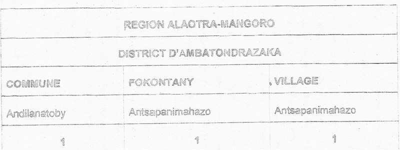
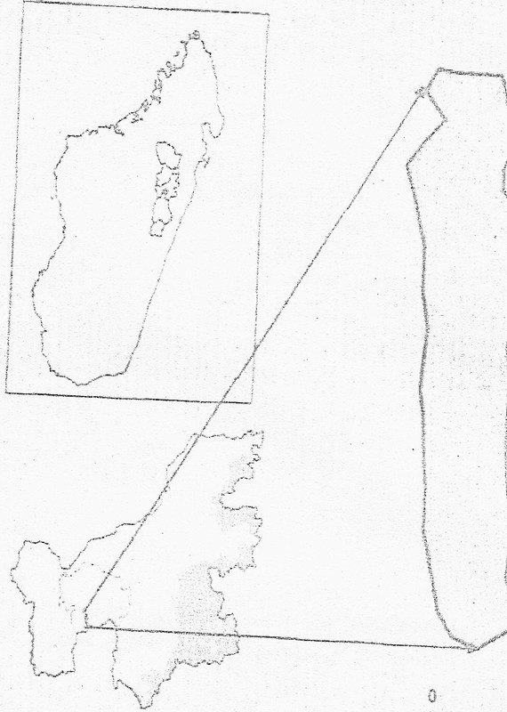
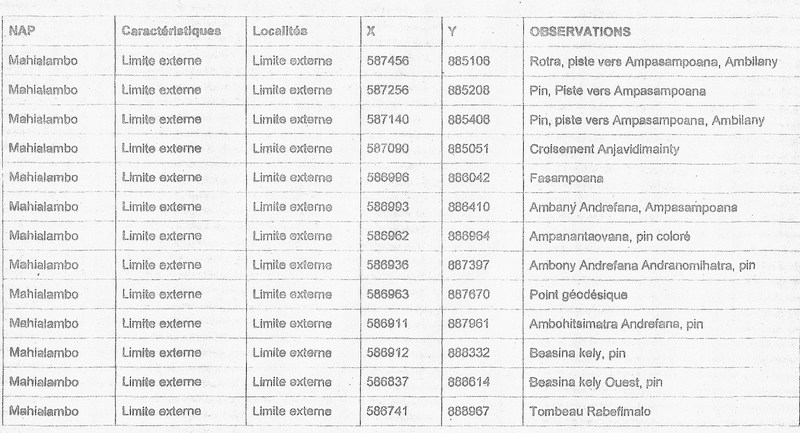
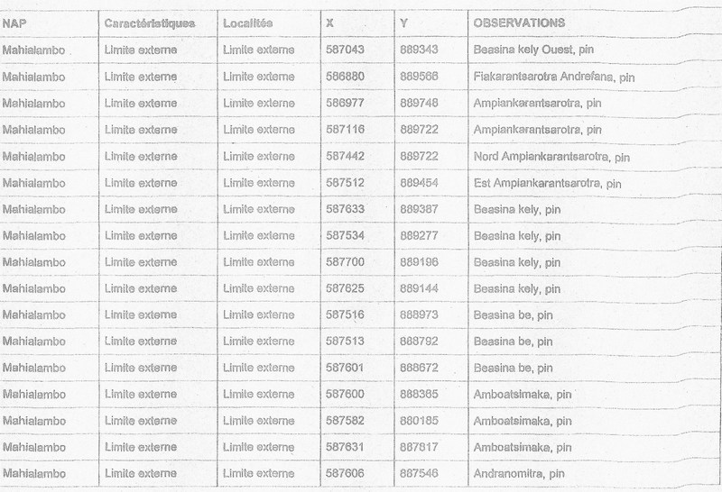
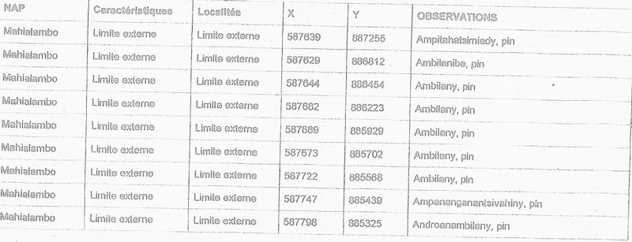
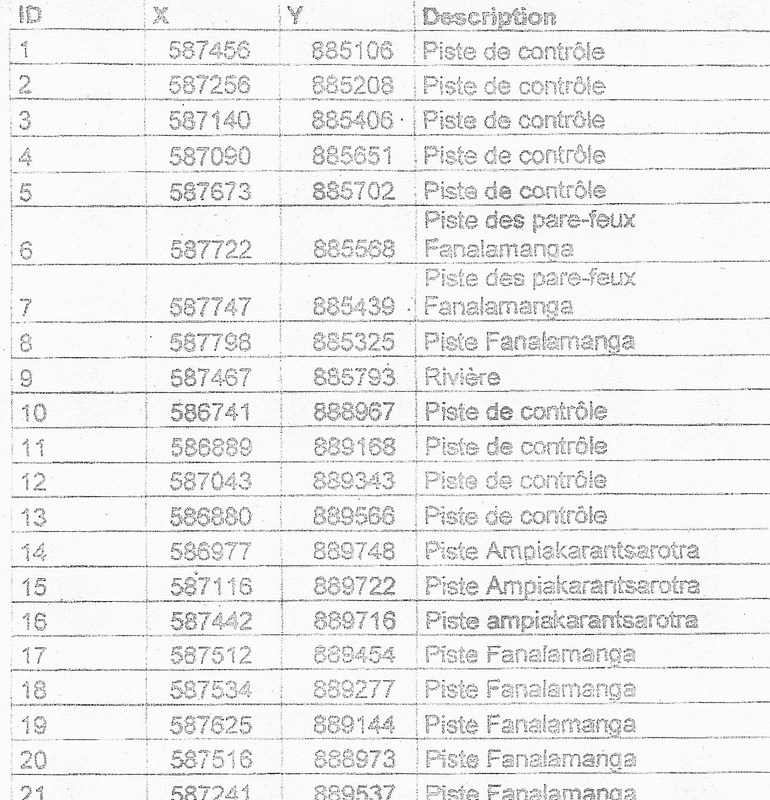
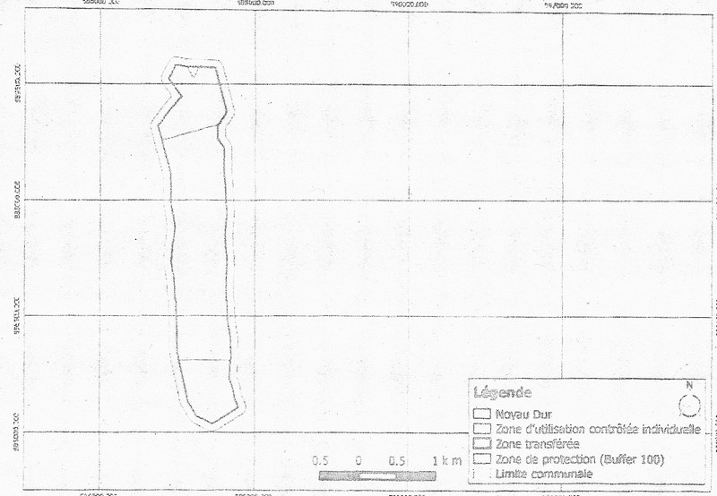

CNLEGIS
CNLEGIS

| DATE(S) | DATE TEXTES | TEXTE(S) | TYPE | NUM TEXTE | NUM | OBJET | OBJET MG | NUM JO | DATE JO | DATE JO FR | PAGE JO | ETAT | NOTE(S) | NOTES MG | DOC PDF FR | DOC PDF MG | MINISTERE(S) | id | HTML FR | HTML MG | |||||||||||||||||||||||||||||||||||||||||||||||||||||||||||||||||||||||||||||||||||||||||||||||||||||||||||||||||||||||||||||||||||||||||||||||||||||||||||||||||||||||||||||||||||||||||||||||||||||
|---|---|---|---|---|---|---|---|---|---|---|---|---|---|---|---|---|---|---|---|---|---|---|---|---|---|---|---|---|---|---|---|---|---|---|---|---|---|---|---|---|---|---|---|---|---|---|---|---|---|---|---|---|---|---|---|---|---|---|---|---|---|---|---|---|---|---|---|---|---|---|---|---|---|---|---|---|---|---|---|---|---|---|---|---|---|---|---|---|---|---|---|---|---|---|---|---|---|---|---|---|---|---|---|---|---|---|---|---|---|---|---|---|---|---|---|---|---|---|---|---|---|---|---|---|---|---|---|---|---|---|---|---|---|---|---|---|---|---|---|---|---|---|---|---|---|---|---|---|---|---|---|---|---|---|---|---|---|---|---|---|---|---|---|---|---|---|---|---|---|---|---|---|---|---|---|---|---|---|---|---|---|---|---|---|---|---|---|---|---|---|---|---|---|---|---|---|---|---|---|---|---|---|---|---|---|---|---|---|---|---|---|---|---|---|---|---|---|
| 28 Avril 2015 | 28-04-2015 | Décret n° 2015-772 Portant création d'une Aire Protégée dénommée "Massif d'Ibity", Communes rurales : Ibity, Manandona et Sahanivotry, District d'Antsirabe-II, Région Vakinankaratra. N° J.O: 3686 Date J.O: 30 Mai 2016 Page J.O: 3242ETAT : En vigueur Voir le texte (VF) | Décret | 2015-772 | D2015-772 | Portant création d'une Aire Protégée dénommée "Massif d'Ibity", Communes rurales : Ibity, Manandona et Sahanivotry, District d'Antsirabe-II, Région Vakinankaratra. | 3686 | 30 Mai 2016 | 30-05-2016 | 3242 | En vigueur | undefined | ,MINISTERE DE L'ENVIRONNEMENT, DE L'ECOLOGIE, DE LA MER ET DES FORETS (MEEMF) | 44739 | REPOBLIKAN’I MADAGASIKARA FITIAVANA-TANINDRAZANA-FANDROSOANA ------------------------------- MINISTERE DE L’ENVIRONNEMENT, DE L’ECOLOGIE, DE LA MER ET DES FORETS ------------------------------- DECRET N°2015-772 Portant création d’une Aire Protégée DENOMMEE « Massif d’Ibity » Communes Rurales : Ibity, Manandona et Sahanivotry District d’Antsirabe II, Région Vakinankaratra ------------------------------- LE PREMIER MINISTRE, CHEF DU GOUVERNEMENT, Vu la Constitution ;
Sur proposition du Ministre de l’Environnement, de l’Ecologie, de la Mer et des Forêts ;
En Conseil de Gouvernement, DECRETE
TITRE I : DE LA CREATION ET DELIMITATION DE L’AIRE PROTEGEE
Article premier : Conformément aux dispositions de l’article 2, 19 et de l’article 20de la loi n°2015-005 du 26 février 2015 portant refonte du Code de gestion des Aires Protégées, il est créé une Aire Protégée dénommée « Massif d’Ibity» située dans le District d’Antsirabe II, dans la Région Vakinankaratra, de catégorie « PAYSAGE HARMONIEUX PROTEGEE », équivalent de la catégorie V selon la classification de l’Union Internationale pour la Conservation de la Nature.
La liste des Communes et Fokontany concernés par l’Aire Protégée « Massif d’Ibity» figure en Annexe 1.
L’Aire Protégée « Massif d’Ibity » d’une superficie totale deSIX MILLE CENT TRENTE SIX HECTARES HECTARES (6.136 HA), fait partie du Système des Aires Protégées de Madagascar.
Article 2 : La carte de localisation de l’Aire Protégée « Massif d’Ibity» figure en Annexe 2 du présent décret. Les descriptifs des points limites de l’Aire Protégée assortis des coordonnées géo référencées établies selon les normes du service topographique décrivant l’Aire Protégée « Massif d’Ibity »sont définis en Annexe 3 du présent décret.
Le périmètre de l’Aire Protégée dépendant du domaine privé de l’Etat doit être immatriculé au nom de l’Etat Malagasy aux fins de la délivrance d’un titre foncier auquel il donne le nom de «Massif d’Ibity » suivant la procédure de sécurisation foncière en vigueur.
Le Ministère chargé des Aires Protégées doit déclencher le processus d’immatriculation auprès de la Direction générale chargée des Services Fonciers, dès la publication au Journal Officiel du présent décret.
TITRE II : DE L’OBJECTIF DE GESTION DE L’AIRE PROTEGEE
Article 3 : Les objectifs principaux de gestion poursuivis dans l’Aire Protégée « Massif d’Ibity » sont de développer un paysage où les hommes et la nature sont en harmonie, dans laquelle l’utilisation rationnelle fleurit et la biodiversité est conservée.
Les objectifs spécifiques de gestion sont de :
L’activité de développement est encouragée, dans la zone périphérique, afin d’améliorer le niveau de vie de la population.
TITRE III : DE L’ORGANISATION DE GESTION DE L’AIRE PROTEGEE
Article 4 : Le Ministère chargé des Aires Protégées est désignée gestionnaire de l’Aire Protégée « Massif d’Ibity ».La délégation de Gestion peut toutefois être accordée par voie réglementaire à une ou des personnes morales de droit public ou de droit privé laquelle détermine les termes de délégation, les droits et obligations des parties.
TITRE IV : DE LA GOUVERNANCE DE L’AIRE PROTEGEE
Article 5 : Le mode de gouvernance qui s’applique à l’Aire Protégée est la cogestion de type collaboratif entre le gestionnaire ou le gestionnaire délégué et les communautés locales.Conformément au principe de gouvernance du Système des Aires Protégées de Madagascar tel que défini dans l’article 6 de la loi n°2015-005 du 26 février 2015, le gestionnaire ou le gestionnaire délégué doit, dans le cadre de gestion de l’Aire Protégée :
Un Comité d’Orientation et de Suivi (COS), dont les membres sont nommés par arrêté régional, assure le suivi de l’exécution des actions découlant du présent décret. Il est présidé par le Directeur Régional de l’Environnement, de l’Ecologie, de la Mer et des Forêts, et est notamment constitué par des représentants des services techniques déconcentrés concernés, de la Région, des présidents conseillers des communes concernées et des autres organismes ou personnes ressources.
TITRE V : DE L’AMENAGEMENT DE L’AIRE PROTEGEE
Article 6 : L’Aire Protégée « Massif d’Ibity »comprend les unités d’aménagement suivant le schéma d’aménagement décrit en Annexe 4 du présent décret : Noyau Dur, Zone Tamponcomposée de Zone d’utilisation durable et de Zone d’Occupation Contrôlée. Noyau dur L’Aire Protégée « Massif d’Ibity » dispose d’une zone de conservation intégrale qui est le Noyau Dur d’une superficie totale d’environ 1 598hectares.Les coordonnées Laborde délimitant le Noyau Dur sont décrites en Annexe 5 du présent décret. Il est à noter que dans le noyau dur, des sentiers de liaison constitués de pistes déjà tracées et utilisées par la population locale reliant les Fokontany dans les Communes Manandona, Sahanivotryet Ibity, les sites cultuels ou Doany et les circuits touristiques peuvent être utilisés. Toutefois, les accès à ces sites cultuels et touristiques sont restreints et règlementés suivant les textes en vigueur sur les Aires Protégée à Madagascar. Zone Tampon :
La Zone Tampon de l’Aire Protégée « Massif d’Ibity » d’une superficie totale de 4.538 hectares environ comprend :
L’étendue de la ZUC peut faire l’objet d’une révision selon les besoins du Plan d’Aménagement et de Gestion (PAG), mais celle de la ZOC ne peut pas être augmentée.
TITRE VI : DE LA REGLE DE GESTION DE L’AIRE PROTEGEE Article 7 : Le Plan d’Aménagement et de Gestion précise les modalités de gestion de l’Aire Protégée « Massif d’Ibity », lesquelles doivent impliquer la population locale et comporte les mesures d’accompagnement nécessaires pour contribuer au développement socio-économique de la région
Article 8 : Le gestionnaire et le gestionnaire délégué de l’Aire Protégée « Massif d’Ibity assurent l'application des règles établies dans les outils de gestion constitués des cahiers de charges, des DINA, et des plans d'aménagement élaborés conjointement avec les COBA.
En vue de renforcer les capacités des Communautés de Base (COBA), le gestionnaire délégué de l’Aire Protégée « Massif d’Ibity fournit de l'assistance technique auxsites de transfert de gestion
Article 9 : Outre les cas prévus par les articles 41, 42, 44, 51, 52, et 53 de la Loi n° 2015-005 du 26 février 2015portant refonte du Code de gestion des Aires Protégées, les activités suivantes sont strictement interdites :
Toutefois, sont notamment autorisés, conformément au schéma global d’aménagement :
Article 10: Conformément aux dispositions de l’article 43 alinéa 2 de la loi n°2015-005 du 26 février 2015 portant refonte du Code de Gestion des Aires Protégées, la visite de l’Aire Protégée « Massif d’Ibity » à des fins touristiques et de recherches scientifiques est soumise selon le cas au paiement des droits d’entrée, des droits de recherche, des droits de propriété intellectuelle, des droits de filmage dont les modalités de perception sont fixées par voie réglementaire. La visite des circuits éco touristiques ouverts à cet effet est soumise au service de guidage respectant les normes selon un code de conduite établi par le gestionnaire.
TITRE VII : DE LA REPRESSION DES INFRACTIONS COMMISES DANS L’AIRE PROTEGEE
Article 11: Les infractions aux dispositions du présent Décret sont constatées et punies conformément aux dispositions de l’article 55 à 79 de la loi n° 2015-005 du 26 février 2015portant refonte du Code de gestion des Aires Protégées et, en cas de silence, aux autres textes en vigueur.
TITRE VIII : DISPOSITIONS FINALES
Article 12: Les Annexes 1, 2, 3, 4 et 5 cités ci-dessus font partie intégrante du présent décret.
Article 13 : En raison de l’urgence et conformément aux dispositions des articles 4 et 6 alinéa 2 de l’Ordonnance n° 62-041 du 19 septembre 1962 relative aux dispositions générales de droit interne et de droit international privé, le présent décret entre immédiatement en vigueur dès sa publication par voie radiodiffusée ou télévisée, indépendamment de son insertion au Journal officiel de la République.
Article 14 : Le Ministre d’Etat chargé des Projets Présidentiels, de l’Aménagement du Territoire et de l’Equipement ; Le Ministre auprès de la Présidence chargé des Mines et du Pétrole ; Le Ministre de la Justice, Garde des Sceaux ; Le Ministre de l’Intérieur et de la Décentralisation ; Le Ministre d’Agriculture ; Le Ministre des Travaux Publics ; Le Ministre du Tourisme, des Transports et de la Météorologie ; Le Ministre de l’Energie et des Hydrocarbures ; Le Ministre de I ’Enseignement Supérieur et de la Recherche Scientifique ; Le Ministre de l’Environnement, de l’Ecologie, de la Mer et des Forêts ; Le Ministre des Ressources Halieutiques et de la Pêche ; Le Ministre de l’Elevage ; Le Ministre de la Culture et de l’Artisanat ; Le Ministre de la Communication et des Relations avec les lnstitutions ; Le Ministre de la Population, de la Protection Sociale et de la Promotion de la Femme et Le Secrétaire d’Etat auprès du Ministère de la Défense Nationale chargé de la Gendarmerie sont chargés, chacun en ce qui le concerne, de l’exécution du présent décret qui sera publié au Journal Officiel de la République de Madagascar. Antananarivo, le28 avril 2015
Par Le Premier Ministre, Général de Brigade Aérienne RAVELONARIVO Jean Chef du Gouvernement
ANNEXE: | ||||||||||||||||||||||||||||||||||||||||||||||||||||||||||||||||||||||||||||||||||||||||||||||||||||||||||||||||||||||||||||||||||||||||||||||||||||||||||||||||||||||||||||||||||||||||||||||||||||||||||
| 28 Avril 2015 | 28-04-2015 | Décret n° 2015-773 Portant création d'une Aire Protégée dénommée "Réserve Spéciale Pointe à Larrée", Communes rurales : Manompana et Antanifotsy, District de Soanierana Ivongo, Région Analanjirofo. N° J.O: 3686 Date J.O: 30 Mai 2016 Page J.O: 3262ETAT : En vigueur Voir le texte (VF) | Décret | 2015-773 | D2015-773 | Portant création d'une Aire Protégée dénommée "Réserve Spéciale Pointe à Larrée", Communes rurales : Manompana et Antanifotsy, District de Soanierana Ivongo, Région Analanjirofo. | 3686 | 30 Mai 2016 | 30-05-2016 | 3262 | En vigueur | undefined | ,MINISTERE DE L'ENVIRONNEMENT, DE L'ECOLOGIE, DE LA MER ET DES FORETS (MEEMF) | 44740 | REPOBLIKAN’I MADAGASIKARA FITIAVANA-TANINDRAZANA-FANDROSOANA ------------------------------- MINISTERE DE L’ENVIRONNEMENT, DE L’ECOLOGIE, DE LA MER ET DES FORETS ------------------------------- DECRET N°2015-773 Portant création de l’Aire ProtégéedeNOMMEE « RESERVE SPECIALE Pointe à Larrée » Communes Rurales Manompana et Antanifotsy District Soanierana Ivongo, Région Analanjirofo -------------------------------
LE PREMIER MINISTRE, CHEF DU GOUVERNEMENT, Vu la Constitution ;
Sur proposition du Ministre de l’Environnement, de l’Ecologie, de la Mer et des Forêts ;
En Conseil de Gouvernement, DECRETE
TITRE I : DE LA CREATION ET DELIMITATION DE L’AIRE PROTEGEE
Article premier : Conformément aux dispositions de l’article 2 et de l’article 15de la loi n°2015-005 du 26 février 2015 portant refonte du Code de gestion des Aires Protégées, il est créé une Aire Protégéedénommée « Réserve Spéciale Pointe à Larrée» située dans la Région d’Analanjirofo, District de SoanieranaIvongo, de statut «Réserve Spéciale» (RS), équivalent de la catégorie IV selon la classification de l’Union Internationale pour la Conservation de la Nature.
La liste des Communes et Fokontany concernés par la Réserve Spéciale « Pointe à Larrée » figure en Annexe 1.
La « Réserve Spéciale Pointe à Larrée » d’une superficie totale de Sept cent soixante dix hectares (770 Ha) fait partie du Système des Aires Protégées de Madagascar.
Article 2 : La carte de localisation de la Réserve Spéciale « Pointe à Larrée» figure en Annexe 2 du présent décret.Les descriptifs des points limites de l’Aire Protégée assortis des coordonnées géo référencées établies selon les normes du service topographique décrivant la « Réserve Spéciale Pointe à Larrée »sont définis en Annexe 3 du présent décret.
Le périmètre de l’Aire Protégée dépendant du domaine privé de l’Etat doit être immatriculé au nom de l’Etat Malagasy aux fins de la délivrance d’un titre foncier portant le nom de l’Aire Protégée « Réserve Spéciale Pointe à Larrée » suivant la procédure de sécurisation foncière en vigueur.
Le Ministère chargé des Aires Protégées doit déclencher le processus d’immatriculation auprès de la Direction générale chargée des Services Fonciers, dès la publication au Journal Officiel du présent décret.
TITRE II : DE L’OBJECTIF DE GESTION DE L’AIRE PROTEGEE Article 3: L’objectif global de la création de la Réserve Spéciale Pointe à Larrée consiste principalement à maintenir, à conserver et à restaurer les espèces et les habitatsreprésentatifsdesécosystèmesprésentstouten améliorantlesconditionsdeviedelapopulation locale. Les objectifs spécifiques de gestion sont de :
L’activité de développement est encouragée, dans la zone périphérique, afin d’améliorer le niveau de vie de la population.
TITRE III : DE L’ORGANISATION DE GESTION DE L’AIRE PROTEGEE
Article 4 : Le Ministère chargé des Aires Protégées est désigné gestionnaire de l’Aire Protégée « Point à Larrée ». La délégation de gestion temporaire peut toutefois être accordée par voie réglementaire à une ou des personnes publiques ou privées, laquelle détermine les termes de la délégation, les droits et obligations des parties.
TITRE IV : DE LA GOUVERNANCE DE L’AIRE PROTEGEE Article 5 : Le mode de gouvernance qui s’applique à la Réserve Spéciale Pointe à Larrée est la cogestion de type collaboratif entre le gestionnaire ou le gestionnaire délégué. Conformément au principe de gouvernance du Système des Aires Protégées de Madagascar tel que défini dans l’article 6 de la loi n°2015-005 du 26 février 2015, le gestionnaire ou le gestionnaire délégué doit, dans le cadre de gestion de l’Aire Protégée « Pointe à Larrée » :
Le Comité d’Orientation et de Suivi (COS), dont les membres sont nommés par arrêté régional, assure le suivi de l’exécution des actions découlant du présent décret. Il est présidé par le Chef de Région Analanjorofo et a comme Vice-Président, le Directeur chargé de l’Environnement, de l’Ecologie, de la Mer et des Forêts de la Circonscription concernée. Le COS comprend notamment les Représentants de la Région, ceux des Services déconcentrés des ministères intéressés, des collectivités territoriales décentralisées, du gestionnaire ou gestionnaire délégué de la « Réserve Spéciale Pointe à Larrée » et des représentants des Communautés de base riveraines de l’aire protégée et issues de la zone de protection, ainsi que toute personne ou organisme choisi pour ses compétences particulières.
TITRE V : DE L’AMENAGEMENT DE L’AIRE PROTEGEE Article 6 : LaRéserve Spéciale Pointe à Larrée d’une superficie totale de 770 hectares est composée de : quatre blocs forestiers dont le bloc forestier de Sahafandrano de 150 Hectares, le bloc forestier d’Andakibe de 436 Hectares, le bloc forestier de Fandrambovo de 173 Hectares et le bloc forestier d’Anjahanintsy de 12 Hectares. La Réserve Spéciale « Point à Larrée » comprend les unités d’aménagement suivantes : noyau dur, zone tampon :Le schéma d’aménagement est décrit en Annexe 4 du présent décret.
Elle est constituée d’une partie de 75 Hectares du bloc forestier de Sahafandrano, une partie de 114 Hectares du bloc forestier Andakibeet une partie de 77 Hectares du bloc forestier de Fandrambovo.Toutefois, en périphérie directe de l’aire protégée sont déjà délimitées les zones potentielles pour l’extension de l’aire protégée, d’une superficie approximative de 2105 Hectares, qui feront l’objet d’une autre création de l’aire protégée avec un plan d’aménagement détaillé. Les coordonnées Laborde, la description des points sommets de la limite de Noyau Dur sont décrits et définis en Annexes 5 du présent décret.
TITRE VI : DE LA REGLE DE GESTION DE L’AIRE PROTEGEE
Article 7 : - Le Plan d’Aménagement et de Gestion précise les modalités de gestion de la « Réserve Spéciale de Pointe à Larrée », lesquelles doivent impliquer la population locale et comporte les mesures d’accompagnement nécessaires pour contribuer au développement socio-économique de la région.
Article 8 : Le gestionnaire et le gestionnaire délégué de la « Reserve Spéciale de Pointe à Larrée » assurent l'application des règles établies dans les outils de gestion constitués des cahiers de charges, des DINA, et des plans d'aménagement élaborés conjointement avec les COBA.
Article 9 : Outre les cas prévus par les articles 41, 42, 44, 51, 52, et 53 de la Loi n° 2015-005 du 26 février 2015 portant refonte sur le Code de gestion des Aires Protégées, les activités suivantes sont strictement interdites sur toute l’étendue de la Réserve Spéciale Point à Larré:
Toutefois, sont notamment autorisés, conformément au plan de gestion :
Article 10: Conformément aux dispositions de l’article 43 alinéa 2 de la loi n°2015-005 du 26 février 2015 portant refonte du Code de Gestion des Aires Protégées, la visite de la « Réserve Spéciale de Pointe à Larrée» à des fins touristiques et de recherches scientifiques est soumise selon le cas au paiement des droits d’entrée, des droits de recherche, des droits de propriété intellectuelle, des droits de filmage dont les modalités de perception sont fixées par voie réglementaire.
La visite des circuits éco-touristiques ouverts à cet effet est soumise au service de guidage respectant les normes selon un code de conduite établi par le gestionnaire.
TITRE VII : DE LA REPRESSION DES INFRACTIONS COMMISES DANS L’AIRE PROTEGEE
Article 11: Les infractions aux dispositions du présent Décret sont constatées et punies conformément aux dispositions l’article 55 à 79 de la loi 20015-005 du 26 février 2015 portant Code de gestion des Aires Protégées et, en cas de silence, aux autres textes en vigueur.
TITRE VIII : DISPOSITIONS FINALES
Article 12: Les Annexes 1, 2, 3, 4 et 5 cités ci-dessus font partie intégrante du présent décret. Article 13 : En raison de l’urgence et conformément aux dispositions des articles 4 et 6 alinéa 2 de l’Ordonnance n° 62-041 du 19 septembre 1962 relative aux dispositions générales de droit interne et de droit international privé, le présent décret entre immédiatement en vigueur dès sa publication par voie radiodiffusée ou télévisée, indépendamment de son insertion au Journal officiel de la République.
Article 14 : Le Ministre d’Etat chargé des Projets Présidentiels, de l’Aménagement du Territoire et de l’Equipement ; Le Ministre auprès de la Présidence chargé des Mines et du Pétrole ; Le Ministre de la Justice, Garde des Sceaux ; Le Ministre de l’Intérieur et de la Décentralisation ; Le Ministre d’Agriculture ; Le Ministre des Travaux Publics ; Le Ministre du Tourisme, des Transports et de la Météorologie ; Le Ministre de l’Energie et des Hydrocarbures ; Le Ministre de I ’Enseignement Supérieur et de la Recherche Scientifique ; Le Ministre de l’Environnement, de l’Ecologie, de la Mer et des Forêts ; Le Ministre des Ressources Halieutiques et de la Pêche ; Le Ministre de l’Elevage ; Le Ministre de la Culture et de l’Artisanat ; Le Ministre de la Communication et des Relations avec les lnstitutions ; Le Ministre de la Population, de la Protection Sociale et de la Promotion de la Femme et Le Secrétaire d’Etat auprès du Ministère de la Défense Nationale chargé de la Gendarmerie sont chargés, chacun en ce qui le concerne, de l’exécution du présent décret qui sera publié au Journal Officiel de la République de Madagascar.
Antananarivo, le 28 avril 2015
Par Le Premier Ministre, Général de Brigade Aérienne RAVELONARIVO Jean Chef du Gouvernement
ANNEXE: | ||||||||||||||||||||||||||||||||||||||||||||||||||||||||||||||||||||||||||||||||||||||||||||||||||||||||||||||||||||||||||||||||||||||||||||||||||||||||||||||||||||||||||||||||||||||||||||||||||||||||||
| 28 Avril 2015 | 28-04-2015 | Décret n° 2015-774 Portant création d'une Aire Protégée dénommée "Vohidava-Betsimilaho", Communes rurales Mahaly, Tsivory, Marotsiraka et Ranobe, District d'Amboasary6sud, Région Anosy. N° J.O: 3686 Date J.O: 30 Mai 2016 Page J.O: 3280ETAT : En vigueur Voir le texte (VF) | Décret | 2015-774 | D2015-774 | Portant création d'une Aire Protégée dénommée "Vohidava-Betsimilaho", Communes rurales Mahaly, Tsivory, Marotsiraka et Ranobe, District d'Amboasary6sud, Région Anosy. | 3686 | 30 Mai 2016 | 30-05-2016 | 3280 | En vigueur | undefined | ,MINISTERE DE L'ENVIRONNEMENT, DE L'ECOLOGIE, DE LA MER ET DES FORETS (MEEMF) | 44741 | REPOBLIKAN’I MADAGASIKARA FITIAVANA-TANINDRAZANA-FANDROSOANA ------------------------------- MINISTERE DE L’ENVIRONNEMENT DE L’ECOLOGIE, DE LA MER ET DES FORETS --------------------------- DECRET N°2015-774
Portant création de l’Aire Protégée deNOMMEE« VOHIDAVA-BETSIMALAHO» COMMUNES RURALES MAHALY, TSIVORY, MAROTSIRAKA ET RANOBE DISTRICT D’AMBOASARY SUD, REGION ANOSY
LE PREMIER MINISTRE, CHEF DU GOUVERNEMENT,
Vu la Constitution ;
Sur proposition du Ministre de l’Environnement, de l’Ecologie, de la Mer et des Forêts ;
En Conseil de Gouvernement,
DECRETE
TITRE I : DE LA CREATION ET DELIMITATION DE L’AIRE PROTEGEE
Article premier : Conformément aux dispositions de l’article 2 et de l’article 21 de la loi n°2015-005 du 26 février 2015 portant refonte du Code de gestion des Aires Protégées, il est créé une Aire Protégée engommée « Vohidava-Betsimalaho» de statut« Réserve de Ressources Naturelles », équivalent de la catégorie VI selon la classification de l’Union Internationale pour la Conservation de la Nature, située dans la Anosy, District d’Amboasary Sud.
La liste des Communes et Fokontany concernés par la Réserve de Ressources Naturelles « Vohidava-Betsimalaho » figure en Annexe 1.
La Réserve de Ressources Naturelles de« Vohidava-Betsimalaho » d’une superficie totale DE DIX HUIT MILLES CENT SOIXANTE NEUF HECTARES (18 169 Ha) fait partie du Système des Aires Protégées de Madagascar
Article 2 : La carte de localisation de la Réserve de Ressources Naturelles «Vohidava-Betsimalaho» figure en Annexe 2 du présent décret. Les descriptifs des points limites de l’Aire Protégée « Vohidava-Betsimalaho» sont définis à l'annexe 3 du présent décret.
Le périmètre de l’Aire Protégée dépendant du domaine privé de l’Etat doit être immatriculé au nom de l’Etat Malagasy aux fins de la délivrance d’un titre foncier portant le nom de l’Aire Protégée «Vohidava-Betsimalaho» suivant la procédure de sécurisation foncière en vigueur.
Le Ministère chargé des Aires Protégées doit déclencher le processus d’immatriculation auprès de la Direction générale chargée des Services Fonciers, dès la publication au Journal Officiel du présent décret.
TITRE II : DE L’OBJECTIF DE GESTION DE L’AIRE PROTEGEE
Article 3: Les objectifs principaux de gestion poursuivis dans la Réserve de Ressources Naturelles« Vohidava-Betsimalaho » sont principalement d’assurer la préservation et le maintien de la biodiversité, la durabilité des fonctions écologiques et l’utilisation durable des ressources naturelles.
Les objectifs spécifiques de gestion sont de :
L’activité de développement est à promouvoir dans la zone périphérique, afin d’améliorer le niveau de vie de la population.
TITRE III : DE L’ORGANISATION DE GESTION DE L’AIRE PROTEGEE
Article 4 : Le Ministère chargé des Aires Protégées est désignée gestionnaire de l’Aire Protégée. La délégation de Gestion peut toutefois être accordée par voie réglementaire à une ou des personnes morales de droit public ou de droit privé laquelle détermine les termes de délégation, les droits et obligations des parties.
TITRE IV : DE LA GOUVERNANCE DE L’AIRE PROTEGEE
Article 5 : Le mode de gouvernance qui s’applique à l’Aire Protégée est la gouvernance partagée de type collaboratif entre le gestionnaire ou le gestionnaire délégué et les communautés locales.
Conformément au principe de gouvernance du Système des Aires Protégées de Madagascar tel que défini dans l’article 6 de la loi n°2015-005 du 26 février 2015, le gestionnaire ou le gestionnaire délégué doit, dans le cadre de gestion de l’Aire Protégée :
Un Comité d’Orientation et de Suivi assure le suivi de l’exécution des actions découlant du présent décret. Il est présidé par le Chef de Région Anosy et a comme Vice-Président, le Directeur Régionalde l’Environnement de l’Ecologie, de la Mer et des Forêts de laRégion concernée. Le COS comprend notamment les Représentants de la Région, ceux des Services déconcentrés des ministères concernés , des collectivités territoriales décentralisées, du gestionnaire ou gestionnaire délégué de Réserve de Ressources Naturelles « Vohidava-Betsimalaho » et des représentants des Communautés de base riveraines de l’aire protégée et issues de la zone de protection, ainsi que toute personne ou organisme choisi pour ses compétences particulières.
TITRE V : DE L’AMENAGEMENT DE L’AIRE PROTEGEE
Article 6 : La Réserve de Ressources Naturelles« Vohidava-Betsimalaho » est subdiviséesuivant les unités d’aménagement comme définis dans le schéma d’aménagement décrit en Annexe 4 du présent décret : -Noyau dur, occupant une surface totale de 8214,37Ha. Cette partie sera gérée comme étant une zone de conservation stricte ; -Zone Tampon entourant les Noyau dur, ayant comme superficie de 9954,77 Ha Tout accès dans ces zones est restreint et réglementé suivant les textes en vigueur sur les AP à Madagascar :
L’étendue de la Zone Tampon (ZT) peut faire l’objet d’une révision selon les besoins du Plan d’Aménagement et de Gestion (PAG).
Zone de protection qui est délimitée par une bordure de 200m de la limite de la NAP. Cette zone est adjacente à la zone tampon et dont les activités anthropiques peuvent toujours avoir des répercussions sur la NAP. Les activités nouvelles dans ces zones doivent avoir l’objet d’une concertation entre les parties prenantes.
Les coordonnées Laborde, la description des points sommets de la limite de Noyau Dur sont décrits et définis en Annexes 5du présent décret.
TITRE VI : DE LA REGLE DE GESTION DE L’AIRE PROTEGEE Article 7 : Le Plan d’Aménagement et de Gestion précise les modalités de gestion de la Réserve de Ressources Naturelles« Vohidava-Betsimalaho », lesquelles doivent impliquer la population locale et comporte les mesures d’accompagnement nécessaires pour contribuer au développement durable de la région.
Article 8 : Le gestionnaire et le gestionnaire délégué de la Réserve de Ressources Naturelles « Vohidava-Betsimalaho »assurent l'application des règles établies dans les outils de gestion constitués des cahiers de charges, des DINA, et des plans d'aménagement élaborés conjointement avec les COBA.
Article 9 : Outre les cas prévus par les articles 41, 42, 44, 51, 52, et 53 de la Loi n° 2015-005 du 26 février 2015 portant refonte du Code de gestion des Aires Protégées, les activités suivantes sont strictement interdites à l’intérieur du noyau dur et la zone tampon de l’Aire Protégée :
Toutefois, sont notamment autorisés, conformément au plan de gestion :
Article 10: Conformément aux dispositions de l’article 43 alinéa 2 de la loi n°2015-005 du 26 février 2015 portant refonte du Code de Gestion des Aires Protégées, la visite de la Réserve de Ressources Naturelles « Vohidava-Betsimalaho » à des fins touristiques et de recherches scientifiques est soumise selon le cas au paiement des droits d’entrée, des droits de recherche, des droits de propriété intellectuelle, des droits de filmage dont les modalités de perception sont fixées par voie réglementaire.
TITRE VII : DE LA REPRESSION DES INFRACTIONS COMMISES DANS L’AIRE PROTEGEE
Article 11: Les infractions aux dispositions du présent Décret sont constatées et punies conformément aux dispositions des articles 55 à 79 de la loi 2015-005 du 26 février 2015 portant refonte du Code de gestion des Aires Protégées et, en cas de silence, aux autres textes en vigueur.
TITRE VIII : DISPOSITIONS FINALES Article 11 : Les Annexes 1, 2, 3, 4 et 5 cités ci-dessus font partie intégrante du présent décret.
Article 13 : En raison de l’urgence et conformément aux dispositions des articles 4 et 6 alinéa 2 de l’Ordonnance n° 62-041 du 19 septembre 1962 relative aux dispositions générales de droit interne et de droit international privé, le présent décret entre immédiatement en vigueur dès sa publication par voie radiodiffusée ou télévisée, indépendamment de son insertion au Journal officiel de la République.
Article 14 : Le Ministre d’Etat chargé des Projets Présidentiels, de l’Aménagement du Territoire et de l’Equipement ; Le Ministre auprès de la Présidence chargé des Mines et du Pétrole ; Le Ministre de la Justice, Garde des Sceaux ; Le Ministre de l’Intérieur et de la Décentralisation ; Le Ministre d’Agriculture ; Le Ministre des Travaux Publics ; Le Ministre du Tourisme, des Transports et de la Météorologie ; Le Ministre de l’Energie et des Hydrocarbures ; Le Ministre de I ’Enseignement Supérieur et de la Recherche Scientifique ; Le Ministre de l’Environnement, de l’Ecologie, de la Mer et des Forêts ; Le Ministre des Ressources Halieutiques et de la Pêche ; Le Ministre de l’Elevage ; Le Ministre de la Culture et de l’Artisanat ; Le Ministre de la Communication et des Relations avec les lnstitutions ; Le Ministre de la Population, de la Protection Sociale et de la Promotion de la Femme et Le Secrétaire d’Etat auprès du Ministère de la Défense Nationale chargé de la Gendarmerie sont chargés, chacun en ce qui le concerne, de l’exécution du présent décret qui sera publié au Journal Officiel de la République de Madagascar.
Antananarivo, le 28 avril 2015 Par Le Premier Ministre, Général de Brigade Aérienne RAVELONARIVO Jean Chef du Gouvernement
ANNEXE: | ||||||||||||||||||||||||||||||||||||||||||||||||||||||||||||||||||||||||||||||||||||||||||||||||||||||||||||||||||||||||||||||||||||||||||||||||||||||||||||||||||||||||||||||||||||||||||||||||||||||||||
| 28 Avril 2015 | 28-04-2015 | Décret n° 2015-780 Portant création définitive de la nouvelle Aire Protégée dénommée "Ambohitr'Antsingy Montagne des Français", Communes rurales : Ramena, Antanamitarana, Mahavanona, District d'Antsiranana II, Région Diana. N° J.O: 3686 Date J.O: 30 Mai 2016 Page J.O: 3298ETAT : En vigueur Voir le texte (VF) | Décret | 2015-780 | D2015-780 | Portant création définitive de la nouvelle Aire Protégée dénommée "Ambohitr'Antsingy Montagne des Français", Communes rurales : Ramena, Antanamitarana, Mahavanona, District d'Antsiranana II, Région Diana. | 3686 | 30 Mai 2016 | 30-05-2016 | 3298 | En vigueur |
| undefined | MINISTERE DE L'ENVIRONNEMENT, DE L'ECOLOGIE, DE LA MER ET DES FORETS (MEEMF) | 44742 | REPOBLIKAN’I MADAGASIKARA Fitiavana-Tanindrazana-Fandrosoana ---------------------------- MINISTERE DE L’ENVIRONNEMENT, DE L’ECOLOGIE, DE LA MER ET DES FORETS ---------------------------- DECRET N° 2015-780 portant création définitive de la nouvelle aire protégée dénommée « AMBOHITR’ANTSINGY MONTAGNE DES FRANÇAIS » communes rurales : Ramena, Antanamitarana, Mahavanona District d’Antsiranana II; Region DIANA ------------------------------
LE PREMIER MINISTRE, CHEF DU GOUVERNEMENT,
Vu la Constitution ;
Sur proposition du MINISTRE DE L’ENVIRONNEMENT, DE L’ECOLOGIE, DE LA MER ET DES FORETS ; En Conseil de Gouvernement,
DECRETE TITRE I: DE LA CREATION ET DELIMITATION DE L’AIRE PROTEGEE Article premier : En application de l’article 2 et l’article n°19 de la Loi n°2015-005 du 26 février 2015 portant refonte du Code de gestion des Aires Protégées, il est créé une aire protégée dénommée « Ambohitr’Antsingy Montagne des Français », de statut « Paysage Harmonieux Protégé », équivalent de la catégorie V selon la classification de l’Union Internationale pour la Conservation de la Nature. L’Aire Protégée « Ambohitr’Antsingy Montagne des Français » localisée dans les Communes Rurales de Ramena, Antanamitarana et Mahavanona, District Antsiranana II, Région DIANA, s’étend sur une superficie totale de six mille quarante neuf hectares (6049 Ha) environ, et fait parties du Système des Aires Protégées de Madagascar. Les terrains concernés sont des domaines privés de l’Etat affectés au service des Eaux et Forêts suivant l’arrêtée n°823 du 02 avril 1955. Article 2 : Une carte de délimitation de l’Aire Protégée comprenant des coordonnées géoréférencées est annexée au présent décret (annexe I). Les points corniers de l’Aire Protégée « Ambohitr’Antsingy Montagne des Français » sont donnés en annexe II, tandisque les descriptifs de quelques uns d’entre eux, ainsi que leur localisation sur carte sont donnés en annexe III. Le périmètre de l’Aire Protégée dépendant du domaine privé de l’Etat doit être immatriculé au nom de l’Etat Malagasy aux fins de la délivrance d’un titre foncier portant le nom de l’Aire Protégée suivant la procédure de sécurisation foncière en vigueur.
Le Ministère chargé des Aires Protégées doit déclencher le processus d’immatriculation auprès de la Direction générale chargée des Services Fonciers, dès la publication au Journal Officiel du présent Décret. TITRE II : DE L’OBJECTIF DE GESTION DE L’AIRE PROTEGEE Article 3 : Le principal objectif est de conserver les valeurs naturelles et culturelles de l’Ambohitr’Antsingy Montagne des Français. Les objectifs spécifiques de la gestion de l’Aire Protégée sont pour leur parts :
TITRE III : DE L’ORGANISATION DE GESTION DE L’AIRE PROTEGEE Article 4 : Le Ministère chargé des Aires Protégées est désigné gestionnaire de l’Aire Protégée «Ambohitr’Antsingy, Montagne des Français». La délégation de gestion temporaire peut toutefois être accordée par voie réglementaire à une ou des personnes publiques ou privées, laquelle détermine les termes de la délégation, les droits et obligations des parties.
Article 5 : Un Comité d’Orientation et de Suivi (COS), dont les membres sont des représentants des différents services techniques au niveau Régional, des collectivités territoriales décentratisées des différents acteurs oeuvrant dans le domaine de la conservation et de protection de l’environnement et des ressources naturelles, ainsi que des communautés locales assurent le suivi de l’exécution des actions découlant du présent décret. Ledit COS est présidé par le Directeur de Développement Régional de la Région DIANA.
TITRE IV : DE LA GOUVERNANCE DE L’AIRE PROTEGEE Article 6 : Le mode de gouvernance qui s’applique à l’Aire Protégée est la cogestion de type collaboratif entre le gestionnaire ou le gestionnaire délégué et les communautés locales Conformément au principe de gouvernance du Système des Aires Protégées de Madagascar tel que défini dans l’article 6 de la loi n°2015-005 du 26 février 2015, le gestionnaire ou le gestionnaire délégué doit, dans le cadre de gestion de l’Aire Protégée « Ambohitr’Antsingy Montagne des Français » :
TITRE V : DE L’AMENAGEMENT DE L’AIRE PROTEGEE Article 7: La nouvelle Aire Protégée « Ambohitr’Antsingy Montagne des Français » comprend les unités d’aménagement suivants : noyau dur, zone tampon composé de Zone d’Occupation Contrôlée et de Zone d’Utilisation Controlée , ainsi que de Zone de Service écotouristique. Une carte de zonage global de l’ensemble de l’Aire Protégée « Ambohitr’Antsingy Montagne des Français » est donnée en Annexe IV du présent décret. Le noyau dur : Le noyau dur de la NAP « Ambohitr’Antsingy Montagne des Français » a une superficie d’environ deux milles neuf cent trendte huit hectares (2938 ha), soit 48,57%. Il est constitué d’un bloc forestier situé sur les hauteurs de la NAP. Les zones tampons : L’Aire Protégée « Ambohitr’Antsigny Montagne des Français » dispose de Zone d’Occupation et d’Utilisation Contrôlée et de deux Zones de Service. Zone d’Occupation et d’Utilisation Contrôlées Cette zone est disposée autour du Noyau Dur et a une superficie de deux milles quatre cent deux (2 402 ha), soit 39,72 % de la superficie totale de la NAP. Zones de Service Ecotouristique La NAP « Ambohitr’Antsingy Montagne des Français » dispose de 02 zones de services écotouristiques qui se trouvent aux deux extrémités Nord et Sud de la NAP.
Le zonage global de l’ensemble de la Nouvelle Aire Protégée est indiqué dans le schéma global d’aménagement annexé au présent décret (Annexe IV).
TITRE VI : DE LA REGLE DE GESTION DE L’AIRE PROTEGEE Article 8 : Un Plan d’Aménagement et de Gestion est élaboré par le gestionnaire de manière participative qui va définir les règles d’utilisation et de gestion des différentes unités d’aménagement. Outre les cas prévus par les articles 41, 42, 44, 51, 52, 53 de la loi n°2015-005 du 26 février 2015 portant refonte de code de gestion des Aires Protégées, toute activité incompatible avec les objectifs de gestion susmentionnés est strictement interdite à l’intérieur du noyau dur et des zones tampons de la Nouvelle Aire Protégée. Notamment,
Toutefois, peuvent être autorisés, conformément au plan d’aménagement :
Les activités ci-après sont réglementées conformément au schéma global d’aménagement et autorisées par l’administration forestière sous réserve de l’avis favorable du gestionnaire à l’intérieur des zones tampon de la Nouvelle Aire Protégée :
Article 9 : Conformément aux dispositions de à l’article 43 de la loi n°2015-005 du 26 février 2015 portant refonte du Code de Gestion des Aires Protégées, la visite de l’Aire Protégée « Ambohitr’Antsingy Montagne des Français » à des fins touristiques et de recherches scientifiques est soumise selon le cas au paiement des droits d’entrée, des droits de recherche, des droits de propriété intellectuelle, des droits de filmage dont les modalités de perception sont fixées par voie réglementaire, tout en respectant le règlement intérieur instauré par le gestionnaire.
TITRE VII : DE LA REPRESSION DES INFRACTIONS COMMISES DANS L’AIRE PROTEGEE Article 10 : Les infractions aux dispositions du présent décret sont constatées et punies conformément aux dispositions du Titre V de la loi n°2015-005 du 26 février 2015 portant Refonte du Code de Gestion des Aires Protégées et, en cas de silence, aux autres textes en vigueur.
TITRE VIII : DISPOSITIONS FINALES Article 11 : Les Annexes cités dans le présent décret en font partie intégrante.
Article 12 : En raison de l’urgence et conformément aux dispositions des articles 4 et 6 alinea 2 de l’Ordonnance n°62-041 du 19 septembre 1962 relative aux dispositions générales de droit interne et de droit international privé, le présent décret entre immédiatement en vigueur dès sa publication par voie radiodiffusée ou télévisée, indépendamment de son insertion au Journal Officiel de la République.
Article 13 : Le Ministre d’Etat chargé des Projets Présidentiels, de l’Aménagement du Territoire et de l’Equipement ; Le Ministre auprès de la Présidence chargé des Mines et du Pétrole ; Le Ministre de la Justice, Garde des Sceaux ; Le Ministre de l’Intérieur et de la Décentralisation ; Le Ministre d’Agriculture ; Le Ministre des Travaux Publics ; Le Ministre du Tourisme, des Transports et de la Météorologie ; Le Ministre de l’Energie et des Hydrocarbures ; Le Ministre de I ’Enseignement Supérieur et de la Recherche Scientifique ; Le Ministre de l’Environnement, de l’Ecologie, de la Mer et des Forêts ; Le Ministre des Ressources Halieutiques et de la Pêche ; Le Ministre de l’Elevage ; Le Ministre de la Culture et de l’Artisanat ; Le Ministre de la Communication et des Relations avec les lnstitutions ; Le Ministre de la Population, de la Protection Sociale et de la Promotion de la Femme et Le Secrétaire d’Etat auprès du Ministère de la Défense Nationale chargé de la Gendarmerie sont chargés, chacun en ce qui le concerne, de l’exécution du présent décret qui sera publié au Journal Officiel de la République de Madagascar.
Antananarivo, le 28 avril 2015 Par Le Premier Ministre Chef du Gouvernement ; Général de Brigade aérienne RAVELONARIVO Jean
| |||||||||||||||||||||||||||||||||||||||||||||||||||||||||||||||||||||||||||||||||||||||||||||||||||||||||||||||||||||||||||||||||||||||||||||||||||||||||||||||||||||||||||||||||||||||||||||||||||||||||
| 28 Avril 2015 | 28-04-2015 | Décret n° 2015-781 Portant création de l'Aire Protégée dénommée "Tsinjoriake" et de sa zone de Protection, District de Toliara-II, Région Atsimo Andrefana. N° J.O: 3686 Date J.O: 30 Mai 2016 Page J.O: 3308ETAT : En vigueur Voir le texte (VF) | Décret | 2015-781 | D2015-781 | Portant création de l'Aire Protégée dénommée "Tsinjoriake" et de sa zone de Protection, District de Toliara-II, Région Atsimo Andrefana. | 3686 | 30 Mai 2016 | 30-05-2016 | 3308 | En vigueur | undefined | MINISTERE DE L'ENVIRONNEMENT, DE L'ECOLOGIE, DE LA MER ET DES FORETS (MEEMF) | 44743 | REPOBLIKAN’I MADAGASIKARA Fitiavana-Tanindrazana-Fandrosoana -------------------------- MINISTERE DE L’ENVIRONNEMENT, DE L’ECOLOGIE, DE LA MER ET DES FORETS --------------------------- DECRET N°2015-781 Portant création de l’aire protégée DENOMMEE « Tsinjoriake » et de sa Zone de Protection, Districts Toliara II, Région Atsimo Andrefana -----------------------------------
LE PREMIER MINISTRE, CHEF DU GOUVERNEMENT,
Vu la Constitution ;
Sur proposition du Ministre de l’Environnement de l’Ecologie, de la Mer et des Forêts ; En Conseil de Gouvernement
DECRETE
TITRE I : DE LA CREATION ET DELIMITATION DE L’AIRE PROTEGEE
Article premier : Conformément aux dispositions de l’article 2 et de l’article 19 de la loi n°2015-005 du 26 février 2015 portant refonte du Code de gestion des Aires Protégées, il est créé une Aire Protégée dénommée « Tsinjoriake» située dans la Région d’Atsimo Andrefana, District Tuléar II, de catégorie «Paysage Harmonieux Protégé», équivalente de la catégorie V selon la classification de l’Union Internationale pour la Conservation de la Nature. Le Paysage Harmonieux Protégé « Tsinjoriake » d’une superficie totale de CINQ MILLE QUATRE CENT QUATRE VINGT QUATRE hectares (5 484 Ha) environ fait partie du Système des Aires Protégées de Madagascar. Le Paysage Harmonieux Protégé de « Tsinjoriake » est composé d’une seule parcelle contenant des formations terrestres et des mangroves
Article 2 : La carte de localisation de « Tsinjoriake » figure en annexe 1 et dans le plan en annexe 2 à l’échelle 1/25.000 du présent décret. Les coordonnées Laborde, la description des points sommets de la limite externe et de la portion de limites entre les points sommets, ainsi que les détails sur les terrains A, B, C, D, E et F, sont respectivement décrites et définies en annexes 3A, 3B et 3C du présent décret.
Le périmètre de l’Aire Protégée dépendant du domaine privé de l’Etat doit être immatriculé au nom de l’Etat Malagasy aux fins de la délivrance d’un titre foncier portant le nom de l’Aire Protégée suivant la procédure de sécurisation foncière en vigueur.
Le Ministère chargé des Aires Protégées doit déclencher le processus d’immatriculation auprès de la Direction générale chargée des Services Fonciers, dès la publication au Journal Officiel du présent décret.
Les terrains titrés et bornés bordant la route menant au village de Saint-Augustin, dénommés A, B, C, D, E et F, sont exclus de l’aire protégée. La superficie totale du Paysage Harmonieux Protégé « Tsinjoriake », stipulée dans l’article 1, tient compte de l’exclusion de ces terrains titrés et bornés.
TITRE II : DE L’OBJECTIF DE GESTION DE L’AIRE PROTEGEE
Article 3 : Le principal objectif de gestion poursuivi dans le Paysage Harmonieux Protégé « Tsinjoriake » est de préserver une interaction équilibrée entre l’homme qui contribue au maintien à long terme de la biodiversité ainsi que la durabilité des fonctions écologiques et des produits naturels nécessaires au bien-être des communautés riveraines. Les objectifs spécifiques de gestion du Paysage Harmonieux Protégé « Tsinjoriake » comprennent:
TITRE III : DE L’ORGANISATION DE GESTION DE L’AIRE PROTEGEE
Article 4 : Le Ministère chargé des Aires Protégées est désigné gestionnaire du Paysage Harmonieux Protégé « Tsinjoriake ». Elle peut toutefois déléguer la gestion à une ou des personnes publiques ou privées selon un contrat de délégation de gestion qui comportera un cahier des charges déterminant les termes de la délégation, les droits et obligations des parties. En outre, le contrat de délégation précise le mode de gestion.
Article 5 : Le Comité d’Orientation et de Suivi (COS), dont les membres sont nommés par arrêté régional, assure le suivi de l’exécution des actions découlant du présent décret. Il est co-présidé par le Chef de Région, le Directeur chargé de l’Environnement, de l’Ecologie, de la Mer et des Forêts de la Circonscription concernée. Le COS comprend notamment les Représentants de la Région, ceux des Services déconcentrés des ministères intéressés, des collectivités territoriales décentralisées, du gestionnaire ou gestionnaire délégué de l’Aire Protégée et des représentants des Communautés de base riveraines de l’aire protégée et issues de la zone de protection, ainsi que toute personne ou organisme choisi pour ses compétences particulières.
TITRE IV : DE LA GOUVERNANCE DE L’AIRE PROTEGEE
Article 6 : - Le mode de gouvernance qui s’applique à l’Aire Protégée est la cogestion de type collaboratif entre le gestionnaire ou le gestionnaire délégué, les communautés locales, ainsi que toutes les parties prenantes. Conformément au principe de gouvernance du Système des Aires Protégées de Madagascar tel que défini dans l’article 6 de la loi n°2015-005 du 26 février 2015, le gestionnaire ou le gestionnaire délégué doit, dans le cadre de gestion de l’Aire Protégée « Tsinjoriake » :
TITRE V : DE L’AMENAGEMENT DE L’AIRE PROTEGEE
Article 7 : Le Paysage Harmonieux Protégé « Tsinjoriake » comprend les unités d’aménagement : des blocs de Noyaux Durs, de Zone Tampon composée de Zone d’Utilisation Durable, Zone d’Occupation Contrôlée, de Zone de Services et de Zones de restauration. La carte de zonage y afférent est figuré dans l’annexe 4A.
Le Paysage Harmonieux Protégé de Tsinjoriake comprend les unités d’dispose de 3 blocs de Noyaux Durs d’une superficie totale d’environ 1 432 ha. Les coordonnées Laborde, la description des points sommets de la limite de ces Noyaux Durs et de la portion de limites entre les points sommets sont décrites et définies respectivement en annexes 4A et 4B du présent décret. Zone Tampon : Le Paysage Harmonieux Protégé de Tsinjoriake dispose d’une Zone Tampon d’une superficie totale de 4 052ha environ. Cette Zone Tampon renferme des Zones d’Utilisation Durable ou «ZUD», Zones d’Occupation Contrôlée ou « ZOC », Zones de Services ou Zones d’intérêt touristique (ZIE) et zones de restauration.
Le Paysage Harmonieux Protégé de Tsinjoriake contient Trois Zones d’Utilisation Durable « ZUD » d’une superficie totale de 490 ha environ. L’étendue de la ZUD peut faire l’objet d’une révision selon les besoins du Plan d’Aménagement et de Gestion (PAG).
Les coordonnées Laborde, la description des points sommets de la limite de ces trois ZUD et de la portion de limite entre les points sommets sont décrites et définies respectivement en annexes 5A et 5B du présent décret.
Le Paysage Harmonieux Protégé de Tsinjoriake contient trois Zones d’Occupation Contrôlée « ZOC » d’une superficie totale de 69 ha environ. L’étendue de la ZOC peut faire l’objet d’une révision selon les besoins du Plan d’Aménagement et de Gestion (PAG).
Les coordonnées Laborde, la description des points sommets de la limite de ces Trois ZOC et de la portion de limite entre les points sommets sont décrites et définies respectivement en annexes 6A et 6B du présent décret.
Le Paysage Harmonieux Protégé de Tsinjoriake contient deux zones de service ou zone d’intérêt écotouristique (ZIE), d’une superficie totale de 644 ha environ. L’étendue de la Zone de Service peut faire l’objet d’une révision selon les besoins du Plan d’Aménagement et de Gestion (PAG).
Les coordonnées Laborde, la description des points sommets de la limite de ces deux Zones de Service (ZS) et de la portion de limite entre les points sommets sont décrits et définis respectivement en annexes 7A et 7B du présent décret.
Le Paysage Harmonieux Protégé de Tsinjoriake contient deux zones de restauration « R » d’une superficie totale de 1 125 ha environ.
Les coordonnées Laborde et description des points sommets de la limite de cette Zone de restauration et de la portion de limite entre les points sommets sont décrits et définis respectivement en annexes 8A et 8B du présent décret.
Article 8 : Le Paysage Harmonieux Protégé « Tsinjoriake » est entouré d’une Zone de Protection d’une superficie totale de 9 183 ha environ.
Les coordonnées Laborde, la description des points sommets de la limite de la Zone de Protection et de la portion de limite entre les points sommets au niveau de ces 2 parcelles sont décrites et définies respectivement en annexes 9A et 9B du présent décret.
TITRE VI : DE LA REGLE DE GESTION DE L’AIRE PROTEGEE
Article 9 : Le Plan d’Aménagement et de Gestion précise les modalités de gestion du Paysage Harmonieux Protégé « Tsinjoriake », lesquelles doivent impliquer la population locale et comporte les mesures d’accompagnement nécessaires pour contribuer au développement socio-économique de la région. Outre les cas prévus et réprimés par la loi n°2015-005 du 26 février 2015 , toute activité incompatible avec les objectifs de gestion susmentionnés est strictement interdite à l’intérieur des noyaux durs et de la zone tampon de la nouvelle aire protégée, notamment :
Toutefois, peuvent être autorisés, conformément au plan d’aménagement et de gestion :
Les activités ci-après sont réglementées conformément au plan d’aménagement et de gestion et autorisées par l’administration forestière, sous réserve de l’avis favorable du gestionnaire, à l’intérieur de la zone tampon de la Nouvelle Aire Protégée :
Article 10 : Conformément aux dispositions de l’article 43 alinéa 2 de la loi n°2015-005 du 26 février 2015 portant refonte du Code de Gestion des Aires Protégées, la visite du Paysage Harmonieux Protégé « Tsinjoriake » à des fins touristiques et de recherches scientifiques est soumise selon le cas au paiement des droits d’entrée, des droits de recherche, des droits de propriété intellectuelle, des droits de filmage dont les modalités de perception sont fixées par voie réglementaire.
La visite des circuits éco-touristiques ouverts à cet effet est soumise au service de guidage respectant les normes selon un code de conduite établi par le gestionnaire ou le gestionnaire délégué.
Les contrats avec les opérateurs touristiques voulant s’implanter dans l’aire protégée sont du ressort du Ministère de l’Environnement, de l’Ecologie, de la Mer et des Forêts.
TITRE VII : DE LA REPRESSION DES INFRACTIONS COMMISES DANS L’AIRE PROTEGEE
Article 11 : Les infractions aux dispositions du présent Décret sont constatées et punies conformément aux dispositions l’article 55 à 79 de la loi 20015-005 du 26 février 2015 portant Code de gestion des Aires Protégées et, en cas de silence, aux autres textes en vigueur.
TITRE VIII : DISPOSITIONS FINALES
Article 12 : Les Annexes 1, 2, 3, 4, 5, 6, 7, 8 et 9 cités ci-dessus font partie intégrante du présent décret.
Article 13 : En raison de l’urgence et conformément aux dispositions des articles 4 et 6 alinéa 2 de l’Ordonnance n° 62-041 du 19 septembre 1962 relative aux dispositions générales de droit interne et de droit international privé, le présent décret entre immédiatement en vigueur dès sa publication par voie radiodiffusée ou télévisée, indépendamment de son insertion au Journal officiel de la République.
Article 14 : Le Ministre d’Etat chargé des Projets Présidentiels, de l’Aménagement du Territoire et de l’Equipement ; Le Ministre auprès de la Présidence chargé des Mines et du Pétrole ; Le Ministre de la Justice, Garde des Sceaux ; Le Ministre de l’Intérieur et de la Décentralisation ; Le Ministre d’Agriculture ; Le Ministre des Travaux Publics ; Le Ministre du Tourisme, des Transports et de la Météorologie ; Le Ministre de l’Energie et des Hydrocarbures ; Le Ministre de I ’Enseignement Supérieur et de la Recherche Scientifique ; Le Ministre de l’Environnement, de l’Ecologie, de la Mer et des Forêts ; Le Ministre des Ressources Halieutiques et de la Pêche ; Le Ministre de l’Elevage ; Le Ministre de la Culture et de l’Artisanat ; Le Ministre de la Communication et des Relations avec les lnstitutions ; Le Ministre de la Population, de la Protection Sociale et de la Promotion de la Femme et Le Secrétaire d’Etat auprès du Ministère de la Défense Nationale chargé de la Gendarmerie sont chargés, chacun en ce qui le concerne, de l’exécution du présent décret qui sera publié au Journal Officiel de la République de Madagascar.
Fait à Antananarivo, le 28 Avril 2015 Général de Brigade aérienne RAVELONARIVO Jean Par Le Premier Ministre, Chef du Gouvernement
| ||||||||||||||||||||||||||||||||||||||||||||||||||||||||||||||||||||||||||||||||||||||||||||||||||||||||||||||||||||||||||||||||||||||||||||||||||||||||||||||||||||||||||||||||||||||||||||||||||||||||||
| 28 Avril 2015 | 28-04-2015 | Décret n° 2015-748 Portant création de l'Aire protégée dénommée "Mahialambo", Commune rurale d'Andilanatoby, District d'Ambatondrazaka, Région Alaotra Mangoro. N° J.O: 3795 Date J.O: 15 Janvier 2018 Page J.O: 219ETAT : En vigueur Voir le texte (VF) | Décret | 2015-748 | D2015-748 | Portant création de l'Aire protégée dénommée "Mahialambo", Commune rurale d'Andilanatoby, District d'Ambatondrazaka, Région Alaotra Mangoro. | 3795 | 15 Janvier 2018 | 15-01-2018 | 219 | En vigueur |
| undefined | MINISTERE DE L'ENVIRONNEMENT, DE L'ECOLOGIE ET DES FORETS (MEEF) | 45727 | REPOBLIKAN’ I MADAGASIKARA Fitiavana-Tanindrazana-Fandrosoana MINISTERE DE L'ENVIRONNEMENT, DE L'ECOLOGIE, DE LA MER ET DES FORETS DECRET N° 2015-748 portant création de l'Aire protégée dénommée «Mahialambo» Commune rurale d'Andilanatoby, District d'Ambatondrazaka, Région Alaotra Mangoro.
LE PREMIER MINISTRE, CHEF DU GOUVERNEMENT, Vu la Constitution ; - Vu la loi n° 70-004 du 23 juin 1970 portant ratification ce la Convention Africaine sur la Conservation de la Nature et des Ressources Naturelles, - Vu la foi n° 95-013 Ou 09 août 1995 autorisant la ratification de la Convention sur la Diversité Biologique, - Vu la loi n° 95-0l7 au 25 août 1995 portant code du Tourisme ; - Vu la loi n° 96-018 du 04 septembre 1996 portant Code Pétrolier ; - Vu la loi n° 96-025 du 30 septembre 1996 relative à la Gestion Locale des Ressources Naturelles Renouvelables, - Vu la loi n° 97-017 du 08 août 1997 portant révision de la Législation Forestière, - Vu la loi n° 99-022 du 30 août 1999 portant Code Minier modifié par la loi n°2005-021 du 17 octobre 2005 portant modification de certaines dispositions portant sur le code minier : - Vu la loi n° 2001-004 du 25 octobre 2001 portant réglementation générale des Dina en matière de sécurité publique ; - Vu la toi n° 2004-001 du 17 juin 2004 relative aux Régions ; - Vu la loi n° 2005-019 du 17 octobre 2005 fixant les principes régissant les statuts des terres, - Vu la loi n° 2006-031 du 24 novembre 2006 fixant le régime juridique de la propriété foncière privée non titrée ; - Vu la loi n° 2008-013 du 23 juillet 2008 relative au Domaine Public ; - Vu la loi n° 2008-114 du 23 juillet 2003 sur le domaine privé de l'Etat, des Collectivités décentralisées et des personnes morales de droit public ; - Vu la loi n° 2015-003 du 19 février 2015 portant Charte de l'Environnement Malagasy actualisé ; - Vu la loi n° 2015-005 du 26 février 2015 portant refonte du Code de gestion des Aires Protégées ; - Vu l'ordonnance n° 60-106 du 27 septembre 1960 relative à la répression ces vols de bœufs, modifiée et complétée par la loi n°61-030 du 18 octobre 1961, l'ordonnance n°62-090 du 1er octobre 1962, l'ordonnance n°75-023 du 1er octobre 1975 et l'ordonnance n°75-015 du 17 mai 1976; - Vu l'ordonnance n° 60-126 du 03 octobre 1960 fixant le régime de la classe, de la pêche et de la protection de la faune ; - Vu l'ordonnance n° 93-022 du 04 mai 1993 portant réglementation de la pèche et de l'aquaculture et de ses textes d'application - Vu le décret n° 99-954 du 15 décembre 1999 relatif à la mise en compatibilité des investissements avec l'environnement (MECIE) modifié par le décret n°2004-167 du 03 février 2004 ; - Vu le décret n°2000-170 du 20 février 2000 portant application du Code Minier ; - Vu le décret n° 2001-122 du 14 février 2001 fixant les conditions de mises en œuvres de la gestion contractualisée des forêts de l’Etat ; - Vu le décret n° 2005-849 du 13 décembre 2005 portant refonte des conditions générales d'applications de la loi n° 97-017 du 8 août 1937 portant révision de la législation forestière ; - Vu le décret n°2006-910 du 19 décembre 2006 fixant les modalités d'application de la loi n°99-022 du 19 août 1999 portant Code minier modifié par la loi n°2005-C21 du 17 octobre 2005 ; - Vu le décret n°2013-785 du 22 octobre 2013 fixant les modalités de délégation de gestion des forêts de l'Etat à des personnes publiques ou privées ; - Vu le décret n° 2015-021 du 14'janvier 2015 portant nomination du Premier Ministre, Chef du Gouvernement ; - Vu le décret n°2015-030 du 25 janvier 2015 portant nomination des membres du Gouvernement : - Vu le décret n°2015-092 du 05 mars 2015 fixant les attributions du Ministre de l'Environnement, de l'Ecologie, de la Mer et des Forêts ainsi que l'Organisation Générale de son Ministère : - Vu l'arrêté interministériel n°4355/1997 du 13 mai 1997 portant définition et délimitation des zones sensibles ; - Vu l'arrêté n°7240/2004 du 14 avril 2004 fixant les caractéristiques pour les engins de pêche en eau douce ; - Vu l'arrêté n° 19560/2004 du 18 octobre 2004 portant suspension d'octroi des permis minier et de permis forestier dans les zones réservées comme Sites de Conservation; - Vu l'arrêté n°21634/2004 du 11 novembre 2004 relatif à la suspension de toute activité extractive des ressources ligneuses dans les zones réservées comme Sites de Conservation ; - Vu l'arrêté interministériel n°17914/2005 du 18 octobre 2006 prorogeant la suspension de l'octroi de permis forestier dans les zones classées en réserves qui sont les Sites de Conservation et les Sites de gestion forestière durable ; - Vu l'arrêté n°6756/2008 du 25 mars 2008 modifiant certaines dispositions de l'Arrêté n°7240/2004 du 14 avril 2004 fixant les caractéristiques pour les engins de pèche en eau douce ; - Vu arrêté interministériel n° 18633/2008/MEFT/MEM du 17 octobre 2008 portant la mise en statut de protection temporaire du fragment de Mahialambo ; - Vu l’arrêté interministériel n° 18633/2008/MEFT/MEM du 17 octobre 2008 portant mise en protection temporaire globale des sites visés par l'arrêté interministériel n°17914 du 18 octobre 2006 et levant la suspension de l'octroi des permis miniers et forestiers pour certains sites ; - Vu l'arrêté interministériel n°52004/2010 du 20 décembre 2010 portant Création, organisation et fonctionnement de sa Commission du Système ces Aires Protégées de Madagascar ; - Vu l'arrêté interministériel n° 52005/2010 du 20 décembre 2010 modifiant l'arrêté interministériel Mine-Forêts n° 18633 du 17 octobre 2003 portant mise en protection temporaire globale des sites visés par l'arrêté n°17914 du 18 octobre 2006 et levant la suspension de l'octroi des permis miniers et forestiers pour certaines sites : ·· Vu l'arrêté n°9874/2013 du 06 mai 2013 modifiant certaines dispositions de l'arrêté interministériel n °52005/2010 du 20 décembre 2010 modifiant l'arrêté interministériel Mines-Forêts n°18633 du 17 octobre 2008 portant mise en protection temporaire globale des sites visés par l'arrêté n° 17914 du 18 octobre 2006 et levant la suspension de l'octroi des permis miniers et forestiers pour certains sites ; - Vu l'entier dossier relatif à la création de l’Aire Protégée « Mahialambo >> ; ··Vu l'avis favorable du Comité de la Commission du Système des Aires Protégées de Madagascar en sa réunion 11 mers 2015 Sur proposition du Ministre de l’Environnement de l'Ecologie, de la Mer et des Forêts : En Conseil de Gouvernement DECRETE TITRE l : DE LA CREATION ET DELIMITATION DE L'AIRE PROTEGEE Article premier : En application ce l'article 2 et de l'article 19 de la loi n° 2015-005 du 26 février20l5 portant refonte du Code de gestion des Aires Protégées, il est créé une Aire Protégée dénommée « Mahialambo» de statut «Paysage Harmonieux Protégé » équivalent de la catégorie V selon la classification de l'Union Internationale pour la Conservation de la Nature» sise dans le District d'Ambatondrazaka, Région Alaotra-Mangoro. La liste des communes et des Fokontany concernés par l'Aire Protégée « Mahialambo » figure en Annexe I L'Aire Protégée « Mahialambo » d'une superficie totale de Trois cent deux hectare (302 ha) fait partie du Système des Aires Protégées de Madagascar. Elle est composée de 86 ha de forêts denses humides. Article 2 : La carte de délimitation de l'Aire Protégée comprenant les coordonnées géoréférencées est fournie en Annexe II du présent décret, de même que les descriptifs des points limitent de l'Aire Protégée « Mahialambo » en Annexe IIIA. Le périmètre de l'Aire Protégée dépendant du domaine privé de I ‘Etat doit être immatriculé au nom de l'Etat Malagasy aux fins de la délivrance d'un titre foncier auquel il donne le nom de l'Aire Protégée suivant la procédure de sécurisation foncière en vigueur. Le Ministère chargé des Aires Protégées doit déclencher le processus d'immatriculation auprès de la Direction générale chargée des Services Fonciers; dès la publication au Journal Officiel du présent décret. TITRE II ; DE L'OBJECTIF DE GESTION DE L'AIRE PROTEGEE Article 3 : Le principal objectif de l'Aire Protégée est de préserver la biodiversité, d'utiliser et valoriser perpétuellement les ressources naturelles afin de contribuer au développement durable de la zone concernée. Les objectifs spécifiques l'Aire Protégée sont d'assurer : La viabilité de la biodiversité par le contrôle des principales menaces telles que les chasses, surpêche, déforestation et érosion : · L'utilisation durable des ressources naturelles de l'Aire Protégée contribuant à l'amélioration de la qualité de vie locale et à la conservation de la biodiversité ; · La gestion de l'Aire Protégée suivant les principes Ce bonne gouvernance, et les règles traditionnelles ou coutumières sur l'utilisation ces ressources naturelles ; · La promotion de l'écotourisme aux fins de développement socioéconomique et culturel en relation avec la conservation tout en impliquant les communautés locales. TITRE III : DE L'ORGANISATION DE GESTION DE L'AIRE PROTEGEE Article 4 : .La Direction Régionale ce l'Environnement, de l'Ecologie, de la Mer et des Forêts est désignée gestionnaire de l'Aire Protégée « Mahialambo ». La délégation de gestion peut toutefois être accordée par voie réglementaire a une ou des personnes morales de droit public ou de droit privé laquelle détermine tes termes de la délégation, les droits et obligations des parties. Un Comité d'Orientation et de Suivi (COS), dont le fonctionnement et les membres seront fixés par voie réglementaire assure le suivi de l'exécution des actions découlant du présent décret. Il est coprésidé par le Chef de Région, la Direction Régionale chargée des Aires Protégées. TITRE IV : DE LA GOUVERNANCE DE L'AIRE PROTEGEE Article 5 : Le mode de gouvernance qui s'applique à l'Aire Protégée est la cogestion de type collaboratif entre le gestionnaire ou le gestionnaire délégué et les communautés locales. Conformément au principe de gouvernance du Système des Aires Protégées de Madagascar tel que défini dans l'article 6 de la loi n°20l5-005 du 26 février 2015 le gestionnaire ou le gestionnaire délégué doit dans le cadre de gestion de l'Aire Protégée : - s'assurer de la transparence et respecter le principe de responsabilité vis-à-vis des diverses parties prenantes et du public ; - respecter le principe de redevabilité ; - respecter le principe de partage équitable des avantages. TITRE V : DE L'AMENAGEMENT DE L'AIRE PROTEGEE Article 6; L'Aire Protégée comprend un Noyau Dur et une zone tampon composée de zones d'occupation contrôlée, zones de transfert de gestion des ressources naturelles renouvelables, des sentiers de liaison, ou Meuve et des rivières de communication. Article,7; Le Noyau Dur s'étend sur une superficie de 85 ha conformément aux dispositions de l'article 6 alinéas 2 de ta loi portant refonte du Code des Aires Protégées sus visée. La description ces points sommes du Noyau Dur sont définis en Annexe IIIB. Article 8 L'Aire Protégée dispose d'une zone tampon d'une superficie totale de 216 ha composée de quatre zones dont Zones d'Utilisation Contrôlée (ZUC), Zones de transfert de gestion des ressources naturelles renouvelables, Zone d'Usage et Zone de Protection (100 m). Article 9 : La Zone d'Utilisation Contrôlée (ZUC) d'une superficie totale de 40,22 ha est la zone utilisée par les communautés locales de base. Les communes, les Fokontany et les villages inclus dans l'Aire Protégée « Mahialambo » sont définis à l'Annexe I. Conformément aux dispositions de l'article 40 de la loi n°2015-005 du 26 février2015 portant refonte du code de gestion des Aires Protégées les droits et obligations sont consignés par des cahiers des charges fixées par voie réglementaire. Article 10 : La Zone de transfert de gestion des ressources naturelles renouvelables de l'aire protégée «Mahialambo» est d'une superficie de 316 ha. Le gestionnaire de l'Aire Protégée assure le suivi des sites de transfert de gestion et leur fournit de l'assistance technique en vue de renforcer les capacités des Communautés de Base (COBA). Le gestionnaire s'assure aussi de l'application des règles établies dans les outils de gestion constitués des cahiers de charges, des DINA, et des pians d'aménagement élaborés conjointement avec Ses COBA. L'étendue de ces zones fixées dans le plan d'aménagement et de gestion ayant reçu l'avis favorable de la Commission du Système des Aires Protégées de Madagascar peut faire objet d'une révision selon les résultats de recherches des suivis écologiques et socioéconomiques. Article 11 : Plusieurs sentiers de liaison traversent l'Aire Protégée « Mahialambo » pour permettre aux communautés locales d'accéder aux marches locales et d'autres villages (en l'occurrence les sentiers reliant le périmètre de Fanalamanga et village Antsapanimahazo). Toute activité susceptible de porter atteinte à l'environnement le long de ces pistes est interdite, notamment la chasse, la pêche, le feu, et tout prélèvement de produits ligneux et non ligneux, ainsi que de produits miniers. TITRE VI : DE LA REGLE DE GESTION DE L'AIRE PROTEGEE Article 12 : Outre les cas prévus par la loi n°2015-005 du 26 février2015 portant refonte du Code de Gestion des Aires Protégées, toute activité incompatible avec les objectifs de gestion de l'Aire Protégée est strictement interdite. Toute activité extractive hormis les autorisations octroyées antérieurement à l'officialisation de l'Aire Protégée est également interdite: Dans les Zones Tampon - Les défrichements et les cultures sur brûlis ; - La chasse, la vente et la consommation d'espèces protégées destinée à des fins commerciales; - Les activités de pâturage ; - Les occupations humaines permanentes ou temporaires sauf dans les zones d'occupations contrôlées (ZOC) et dans les parcelles privées. Dans les Noyaux Durs - Les occupations humaines permanentes ; - Toute activité extractive ; - Les activités de pâturage sous quelque forme que es soit ; - L'exploitation forestière, - Les défrichements et cultures sur brûlis ; - La chasse, la vente et la consommation de toutes les espèces du Noyau Dur. Article 13 : Hormis les cas prévus par la loi n°2015-005 du 26 février2015 portant refonte du Code de Gestion dés Aires Protégées, sont notamment autorisés, conformément au plan d'aménagement et de gestion :
- l'utilisation piétonnière des principaux sentiers de liaison existants ; - l'accès aux sites cultuels par les sentiers y menant et la pratique des activités cultuelles. Les activités ci-après sont réglementées conformément au plan d'aménagement et de gestion et selon un cahier de charges établi entre-le gestionnaire et les usagers à l'intérieur de la zone tampon tout en respectant le règlement intérieur de l'Aire Protégée: - Toute activité extractive antérieure à la mise en protection temporaire de l'Aire Protégée mais moyennant une étude d'impact environnementale ou une mise en conformité environnementale préalable ; - le pâturage ainsi que le parcage de troupeaux de bovidés ; - la coupe de bois sur pied pour les besoins des communautés riveraines ; - le ramassage des bois morts gisant, la capture d'essaim d'abeilles, la récolte du miel et de la cire, des plantes médicinales, des fruits et des plantes comestibles ; - le prélèvement d'autres produits accessoires des forêts respectant les principes de l'utilisation durable ; - la chasse et la capture d'animaux sauvages selon la loi en vigueur ; - La commercialisation des espèces conforme à la CITES ; - le tournage de films et la prise de photographies : - la pêche continentale et la pêche côtière selon la réglementation en vigueur. Le schéma d'aménagement et de gestion de l'Aire Protégée « Mahialambo » est en Annexe IV. Article 14 ; Conformément aux dispositions de l'article 40 de la loi n"2015-005 du 26 fèvner2015 portant refonte du code de gestion des Aires Protégées, en cas de découverte des produits extractifs dans l'Aire Protégée « Mahialambo», et dans une perspective d'une cohabitation, il ne pourra être procédé à l'exploitation qu'après modification du zonage interne de cette Aire Protégée. Article 15 : Conformément aux dispositions de l'article 43 de la loi n'2015-005 du 28 février 2015 portant refonte du Code de Gestion des Aires Protégées, la visite des Aires Protégées « Mahialambo » à des fins touristiques et de recherches scientifiques est soumise selon le cas su paiement des droits d'entrée, des droits de recherche, des droits de propriété intellectuelle, des droits de filmage dont les modalités de perception sont fixées par voie réglementaire. La visite des circuits écotouristiques ouverts à cet effet est soumise au service de guidage respectant les normes selon un code de conduite établi par le gestionnaire. Dans une perspective d'une cohabitation harmonieuse, l'accès à l'Aire Protégée pour les titulaires des droits acquis antérieurement à l'officialisation de l'Aire Protégée doit être précédé d'une annonce farte par les titulaires auprès du gestionnaire. A cet effet, un protocole de collaboration est établi entre les deux parties. TITRE VIl : DE LA REPRESSION DES INFRACTIONS COMMISES DANS L'AIRE PROTEGEE Article 16 ; Les infractions aux dispositions du présent décret sont constatées et punies conformément aux dispositions pertinentes de la loi, 2015-005 du 26 février 2015 portant refonte du Code de Gestion des Aires Protégées et, et aux autres textes en vigueur en cas de silence de la loi précité. TITRE VIII : DISPOSITIONS FINALES Article 17 : Les Annexes cités dans le présent décret en font partie intégrante Article 18 : En raison de l'urgence et conformément aux dispositions des articles 4 et 6 alinéa 2 de l'Ordonnance n°62-041 du 19 septembre 1962 relative aux dispositions générales de droit interne et de droit international privé, le présent décret entre immédiatement en vigueur dès sa publication par voie radiodiffusée ou télévisée, indépendamment de son insertion au Journal Officiel de la République. Article 19 : Le Ministre d'Etat chargé des Projets Présidentiels, de l'Aménagement du Territoire et de l'Equipement; le Ministre auprès de la Présidence chargé des Mines et du Pétrole; le Garde des Sceaux, Ministre de la Justice; le Ministre de l'Intérieur et de la Décentralisation; le Ministre de l'Agriculture; le Ministre des Travaux Publics; le Ministre du Tourisme, des Transports et de la Météorologie; le Ministre de l'Energie et des Hydrocarbures; le Ministre de l'Enseignement Supérieur et de la Recherche Scientifique; le Ministre de l'Environnement, de l'Ecologie, de la Mer et des Forêts; le Ministre de la Pêche et des Ressources Halieutiques; le Ministre de l'Elevage; le Ministre de la Culture et de l'Artisanat; le Ministre de la Communication et des Relations avec les Institutions; le Ministre de la Population, de la Protection Sociale et de la Promotion de la Femme et le Secrétaire d'Etat auprès du Ministère de la Défense Nationale chargé de la Gendarmerie sont chargés, chacun en ce qui le concerne, de l'exécution du présent décret qui sera publié au Journal Officiel de la République de Madagascar.
Fait à Antananarivo, le 28 Avril 2015, Général de Brigade Aérienne RAVELONARIVO Jean. Par le Premier Ministre, Chef du Gouvernement ; Le Ministre d'Etat chargé des Projets Présidentiels, de l'Aménagement du Territoire et de l'Equipement, RAKOTOVAO Rivo. Le Ministre auprès de la Présidence chargé des Mines et du Pétrole, LALAHARISAINA Joéli Valérien. Le Garde des Sceaux, Ministre de la Justice, RAMANANTENASOA Noëline. Le Ministre de l'Intérieur et de la Décentralisation, MAHAFALY Solonandrasana Olivier. Le Ministre de l'Agriculture, RAVATOMANGA Roland. Le Ministre des Travaux Publics, RATSIRAKA larovana Roland. Le Ministre du Tourisme, des Transports et de la Météorologie, ANDRIANTIANA Jacques Ulrich. Le Ministre de l'Energie et des Hydrocarbures, HORACE Gatien. Le Ministre de l'Enseignement Supérieur et de la Recherche Scientifique, RASOAZANANERA Marie Monique Le Ministre de l'Environnement, de l'Ecologie, de la Mer et des Forêts, BEBOARIMISA Ralava. Le Ministre de la Pêche et des Ressources Halieutiques, AHMAD. Le Ministre de l'Elevage, RAMPARANY Anthelme. Le Ministre de la Culture et de l'Artisanat, RASAMOELINA Brigitte. Le Ministre de la Communication et des Relations avec les Institutions, ANDRIANJATO RAZAFINDAMBO Vonison. Le Ministre de la Population, de la Protection Sociale et de la Promotion de la Femme, REALY Onitiana Voahariniaina. Le Secrétaire d'Etat auprès du Ministère de la Défense Nationale chargé de la Gendarmerie, Général de Corps d'Armée PAZA Didier Gérard. Annexe I : du décret n°2015-748 du 28 Avril 2015 portant création de l'Aire Protégée dénommée « Mahialambo », Commune Rurale Andilanatoby, District d'Ambatondrazaka, Région Alaotra Mangoro Liste des Communes, Fokontany et villages concernés par l'Aire Protégée de Mahialambo

 Annexe II : du Décret n° 2015-748 du 29 Avril 2015 portant création de l'Aire Protégée dénommée " Mahialambo ", sis dans la commune Rurale Andilanatoby, District d'Ambatondrazaka, Région Alaotra Mangoro A-Description des points sommets 

 B : Description des sommets du Noyau Dur  Annexe IV : Schéma d'aménagement et de gestion de l'Aire Protégée de Mahialambo  | |||||||||||||||||||||||||||||||||||||||||||||||||||||||||||||||||||||||||||||||||||||||||||||||||||||||||||||||||||||||||||||||||||||||||||||||||||||||||||||||||||||||||||||||||||||||||||||||||||||||||
| 28 Avril 2015 | 28-04-2015 | Décret n° 2015-751 Portant création de l'Aire protégée dénommée "Analabe Betanatanana", Commune rurale d'Ambatosoratra, District d'Ambatondrazaka, Région Alaotra Mangoro. N° J.O: 3795 Date J.O: 15 Janvier 2018 Page J.O: 238ETAT : En vigueur Voir le texte (VF) | Décret | 2015-751 | D2015-751 | Portant création de l'Aire protégée dénommée "Analabe Betanatanana", Commune rurale d'Ambatosoratra, District d'Ambatondrazaka, Région Alaotra Mangoro. | 3795 | 15 Janvier 2018 | 15-01-2018 | 238 | En vigueur |
| undefined | MINISTERE DE L'ENVIRONNEMENT, DE L'ECOLOGIE ET DES FORETS (MEEF) | 45728 | REPOBLIKAN'I MADAGASIKARA Fitiavana-Tanindrazana -Fandrosoana ------------------------ MINISTERE DE L’ENVIRONNEMENT, DE L’ECOLOGIE, DE LA MER ET DES FORETS -------------------------- DECRET N°2015-751 Portant création de l’Aire Protégée DENOMMEE « Analabe Betanatanana » Commune Rurale Ambatosoratra District d’Ambatondrazaka, Région Alaotra Mangoro ------------------------- LE PREMIER MINISTRE, CHEF DU GOUVERNEMENT, Vu la Constitution ;
Sur proposition du Ministre de l’Environnement, de l’Ecologie, de la Mer et des Forêts ; En Conseil de Gouvernement, DECRETE TITRE I : DE LA CREATION ET DELIMITATION DE L’AIRE PROTEGEE Article premier : En application de l’article 2 et de l’article 21 de la loi n°2015-005 du 26 Février 2015 portant refonte du Code de gestion des Aires Protégées, il est créé une Aire Protégée dénommée « Analabe Betanatanana » de catégorie « Reserve de Ressources Naturelles », équivalente de la catégorie VI selon la classification de l’Union Internationale pour la Conservation de la Nature, sise dans le District d’Ambatondrazaka, Région Alaotra-Mangoro, La liste des communes, des Fokontany et des villages concernés par l’Aire Protégée « Analabe Betanatanana» figure en Annexe I. L’Aire Protégée « Analabe Betanatanana » d’une superficie totale de QUATRE CENT TRENTE QUATRE ET SEPT DIZAINES HECTARES (434,7 ha) ha fait partie du Système des Aires Protégées de Madagascar. Article 2 : La carte de délimitation de l’Aire Protégée comprenant les coordonnées géoréférencées est fournie en Annexe II du présent décret, de même que les descriptifs des points limites de l’Aire Protégée « Analabe Betanatanana » en annexe III A. Le périmètre de l’Aire Protégée dépendant du domaine privé de l’Etat doit être immatriculé au nom de l’Etat Malagasy aux fins de la délivrance d’un titre foncier auquel il donne le nom de l’Aire Protégée» suivant la procédure de sécurisation foncière en vigueur. Le Ministère chargé des Aires Protégées doit déclencher le processus d’immatriculation auprès de la Direction générale chargée des Services Fonciers, dès la publication au Journal Officiel du présent décret. TITRE II : DE L’OBJECTIF DE GESTION DE L’AIRE PROTEGEE Article 3 : Le principal objectif de l’Aire Protégée est de préserver la biodiversité, d’utiliser et valoriser perpétuellement les ressources naturelles afin de contribuer au développement durable de la zone concernée. Les objectifs spécifiques l’Aire Protégée sont d’assurer :
TITRE III : DE L’ORGANISATION DE GESTION DE L’AIRE PROTEGEE Article 4 : La Direction Régionale de l’Environnement, de l’Ecologie, de la Mer et des Forêts est désignée gestionnaire de l’Aire Protégée « Analabe Betanatanana ». La délégation de gestion peut toutefois être accordée par voie réglementaire à une ou des personnes morales de droit public ou de droit privé laquelle détermine les termes de la délégation, les droits et obligations des parties. Un Comité d’Orientation et de Suivi (COS), dont le fonctionnement et les membres seront fixés par voie réglementaire assure le suivi de l’exécution des actions découlant du présent décret. Il est coprésidé par le Chef de Région, la Direction Régionale chargée des Aires Protégées. TITRE IV : DE LA GOUVERNANCE DE L’AIRE PROTEGEE Article 5 : Le mode de gouvernance qui s’applique à l’Aire Protégée est la cogestion de type collaboratif entre le gestionnaire ou le gestionnaire délégué et les communautés locales. Conformément au principe de gouvernance du Système des Aires Protégées de Madagascar tel que défini dans l’article 6 de la loi n°2015-005 du 26 février 2015, le gestionnaire ou le gestionnaire délégué doit, dans le cadre de gestion de l’Aire Protégée :
TITRE V : DE L’AMENAGEMENT DE L’AIRE PROTEGEE Article 6 : L’Aire Protégée comprend un noyau dur et une zone tampon composée de zones d’utilisation contrôlée, zones de transfert de gestion des ressources naturelles renouvelables et des sentiers de liaison. Article 7 : Le Noyau Dur s’étend sur une superficie de 52 ha, conformément aux dispositions de l'article 6 alinéa 2 de la loi portant refonte du Code des Aires Protégées sus visée. La description des points sommets du noyau dur sont définis en Annexe III B. Article 8 : L’Aire Protégée dispose d’une zone tampon d’une superficie de 419,3 ha composée de trois zones dont Zones d’Utilisation Contrôlée (ZUC), Zones de transfert de gestion des ressources naturelles renouvelables et Zone de Protection. Article 9 : Les Zones d’Utilisation Contrôlée (ZUC) individuelle d’Analabe Betanantanana localisée dans la commune rurale d’Ambatosoratra a une superficie totale de 156 ha à savoir : Conformément aux dispositions de l’article 40 de la loi n°2015-005 du 26 Février 2015 portant refonte du code de gestion des Aires Protégées les droits et obligations sont consignés par des cahiers des charges fixées par voie réglementaire. Article 10 : Les Zones de transfert de gestion des ressources naturelles renouvelables d’une superficie totale 443 ha. Le gestionnaire de l’Aire Protégée assure le suivi des sites de transfert de gestion et leur fournit de l'assistance technique en vue de renforcer les capacités des Communautés de Base (COBA). Le gestionnaire s’assure aussi de l'application des règles établies dans les outils de gestion constitués des cahiers de charges, des DINA, et des plans d'aménagement élaborés conjointement avec les COBA. L’étendue de ces zones fixées dans le plan d’aménagement et de gestion ayant reçu l’avis favorable de la Commission du Système des Aires Protégées de Madagascar peut faire objet d’une révision selon les résultats de recherches des suivis écologiques et socioéconomiques. Article 11 : Plusieurs sentiers de liaison traversent l’Aire Protégée « Analabe Betanatanana » pour permettre aux communautés locales d’accéder aux marches locales et d’autres villages (en l’occurrence les sentiers reliant entre les villages suivants Antsiradava et Andranomalaza-Nord, Andranomalaza-Nord et Ambatomasina). Toute activité susceptible de porter atteinte à l’environnement le long de ces pistes est interdite, notamment la chasse, la pêche, le feu, et tout prélèvement de produits ligneux et non ligneux, ainsi que de produits miniers. TITRE VI : DE LA REGLE DE GESTION DE L’AIRE PROTEGEE Article 12 : Outre les cas prévus par la loi n°2015-005 du 26 Février 2015 portant refonte du Code de Gestion des Aires Protégées, toute activité incompatible avec les objectifs de gestion de l’Aire Protégée est strictement interdite. Toute activité extractive hormis les autorisations octroyées antérieurement à l’officialisation de l’Aire Protégée est également interdite: Dans les Zones Tampon
Dans les Noyaux Durs
Article 13 : Hormis les cas prévus par la loi n°2015-005 du 26 Février 2015 portant refonte du Code de Gestion des Aires Protégées, sont notamment autorisés, conformément au plan d’aménagement et de gestion :
Le schéma d’aménagement et de gestion de l’Aire Protégée « Analabe Betanatanana » est en Annexe V. Article 14 : Conformément aux dispositions de l’article 43 de la loi n°2015-005 du 26 Février 2015 portant refonte du Code de Gestion des Aires Protégées, la visite de l’Aire Protégée « Analabe Betanatanana » à des fins touristiques et de recherches scientifiques est soumise selon le cas au paiement des droits d’entrée, des droits de recherche, des droits de propriété intellectuelle, des droits de filmage dont les modalités de perception sont fixées par voie réglementaire. La visite des circuits écotouristiques ouverts à cet effet est soumise au service de guidage respectant les normes selon un code de conduite établi par le gestionnaire. Dans une perspective d’une cohabitation harmonieuse, l’accès à l’Aire Protégée pour les titulaires des droits acquis antérieurement à l’officialisation de l’Aire Protégée doit être précédé d’une annonce faite par les titulaires auprès du gestionnaire. A cet effet, un protocole de collaboration est établi entre les deux parties. TITRE VII : DE LA REPRESSION DES INFRACTIONS COMMISES DANS L’AIRE PROTEGEE Article 15 : Les infractions aux dispositions du présent décret sont constatées et punies conformément aux dispositions pertinentes de la loi 2015-005 du 26 février 2015 portant refonte du Code de Gestion des Aires Protégées et, et aux autres textes en vigueur en cas de silence de la loi précité. TITRE VIII : DISPOSITIONS FINALES Article 16 : Les Annexes cités dans le présent décret en font partie intégrante. Article 17 : En raison de l’urgence et conformément aux dispositions des articles 4 et 6 alinéa 2 de l’Ordonnance n62-041 du 19 septembre 1962 relative aux dispositions générales de droit interne et de droit international privé, le présent décret entre immédiatement en vigueur dès sa publication par voie radiodiffusée ou télévisée, indépendamment de son insertion au Journal Officiel de la République. Article 18 : Le Ministre d’Etat chargé des Projets Présidentiels, de l’Aménagement du Territoire et de l’Equipement ; Le Ministre auprès de la Présidence chargé des Mines et du Pétrole ; Le Ministre de la Justice, Garde des Sceaux ; Le Ministre de l’Intérieur et de la Décentralisation ; Le Ministre d’Agriculture ; Le Ministre des Travaux Publics ; Le Ministre du Tourisme, des Transports et de la Météorologie ; Le Ministre de l’Energie et des Hydrocarbures ; Le Ministre de I ’Enseignement Supérieur et de la Recherche Scientifique ; Le Ministre de l’Environnement, de l’Ecologie, de la Mer et des Forêts ; Le Ministre de la Pêche et des Ressources Halieutiques ; Le Ministre de l’Elevage ; Le Ministre de la Culture et de l’Artisanat ; Le Ministre de la Communication et des Relations avec les lnstitutions ; Le Ministre de la Population, de la Protection Sociale et de la Promotion de la Femme et Le Secrétaire d’Etat auprès du Ministère de la Défense Nationale chargé de la Gendarmerie sont chargés, chacun en ce qui le concerne, de l’exécution du présent décret qui sera publié au Journal Officiel de la République de Madagascar.
Fait à Antananarivo, le 28 Avril 2015
Par Le Premier Ministre Général de Brigade Aérienne RAVELONARIVO Jean Chef du Gouvernement
Pour ampliation conforme Antananarivo, le ………….. LE SECRETAIRE GENERAL DU GOUVERNEMENT ZAFINANDRO Armand Annexe I du décret n°2015-751 portant création de l’Aire Protégée dénommée « Analabe-Betanatanana », sis dans la Commune Rurale Ambatosoratra, District d’Ambatondrazaka, Région Alaotra Mangoro
Liste des Communes, Fokontany et villages concernés par l’Aire Protégée d’Analabe-Betanatanana
Vu pour être annexé Au décret n°2015-751 portant création de l’Aire Protégée dénommée « Analabe-Betanatanana », sis dans la Commune Rurale Ambatosoratra, District d’Ambatondrazaka, Région Alaotra Mangoro Le Premier Ministre, Chef du Gouvernement Général de Brigade Aérienne RAVELONARIVO Jean
Pour ampliation conforme Antananarivo, le ………….. LE SECRETAIRE GENERAL DU GOUVERNEMENT ZAFINANDRO Armand
Annexe II : Carte de délimitation de l’Aire Protégée d’Analabe Betanantanana
Vu pour être annexée Au décret n°2015-751 portant création de l’Aire Protégée dénommée « Analabe-Betanatanana », sis dans la Commune Rurale Ambatosoratra, District d’Ambatondrazaka, Région Alaotra Mangoro Le Premier Ministre, Chef du Gouvernement Général de Brigade Aérienne RAVELONARIVO Jean Pour ampliation conforme Antananarivo, le ………….. LE SECRETAIRE GENERAL DU GOUVERNEMENT ZAFINANDRO Armand
Annexe III : du Décret n°2015-751 Portant création de l’Aire Protégée dénommée « Analabe-Betanatanana », sis dans la Commune Rurale Ambatosoratra, District d’Ambatondrazaka, Région Alaotra Mangoro A-Descriptifs des points sommets
B : Description des points sommets du noyau dur
Vu pour être annexé Au décret n°2015-751 portant création de l’Aire Protégée dénommée « Analabe-Betanatanana », sis dans la Commune Rurale Ambatosoratra, District d’Ambatondrazaka, Région Alaotra Mangoro Le Premier Ministre, Chef du Gouvernemen Général de Brigade Aérienne RAVELONARIVO Jean Pour ampliation conforme Antananarivo, le ………….. LE SECRETAIRE GENERAL DU GOUVERNEMENT ZAFINANDRO Armand
Annexe IV : Schéma s’aménagement et de gestion de l’Aire Protégée d’Analabe-Betanatanana
Vu pour être annexée Au décret n°2015-751 portant création de l’Aire Protégée dénommée « Analabe-Betanatanana », sis dans la Commune Rurale Ambatosoratra, District d’Ambatondrazaka, Région Alaotra Mangoro
Le Premier Ministre, Chef du Gouvernement Général de Brigade Aérienne RAVELONARIVO Jean
Pour ampliation conforme Antananarivo, le ………….. LE SECRETAIRE GENERAL DU GOUVERNEMENT ZAFINANDRO Armand | |||||||||||||||||||||||||||||||||||||||||||||||||||||||||||||||||||||||||||||||||||||||||||||||||||||||||||||||||||||||||||||||||||||||||||||||||||||||||||||||||||||||||||||||||||||||||||||||||||||||||
| 28 Avril 2015 | 28-04-2015 | Décret n° 2015-760 Portant création de l'Aire Protégée dénommée "Allée des Baobabs", Commune rurale de Bemanonga, District de Morondava, Région Menabe. N° J.O: 3797 Date J.O: 29 Janvier 2018 Page J.O: 448ETAT : En vigueur Voir le texte (VF) | Décret | 2015-760 | D2015-760 | Portant création de l'Aire Protégée dénommée "Allée des Baobabs", Commune rurale de Bemanonga, District de Morondava, Région Menabe. | 3797 | 29 Janvier 2018 | 29-01-2018 | 448 | En vigueur | undefined | MINISTERE DE L'ENVIRONNEMENT, DE L'ECOLOGIE, DE LA MER ET DES FORETS (MEEMF) | 45735 | REPOBLIKAN’I MADAGASIKARA FITIAVANA-TANINDRAZANA-FANDROSOANA --------------------------- MINISTÈRE DE L’ENVIRONNEMENT, DE L’ÉCOLOGIE, DE LA MER ET DES FORETS --------------------------- DÉCRET N° 2015-760 Portant création de l’Aire Protégée DÉNOMMÉE « Allée des Baobabs » Commune Rurale : Bemanonga District Morondava, Région Menabe
LE PREMIER MINISTRE, CHEF DU GOUVERNEMENT,
Vu la Constitution ;
Sur proposition du Ministre de l'Environnement, de l’Ecologie, de la Mer et des Forêts ;
En Conseil de Gouvernement,
DÉCRÈTE
TITRE I : DE LA CRÉATION ET DÉLIMITATION DE L’AIRE PROTÉGÉE
Article premier : Conformément à l’article 2 et à l’article 17 de la loi n°2015-005 du 22 janvier 2015 portant refonte du Code de Gestion des Aires Protégées, il est créé une Aire Protégée, dénommée « Allée des Baobabs», de statut « Monument Naturel », équivalent de la catégorie III selon la classification de l’UICN. L’Aire Protégée gérée principalement à des fins d’utilisation durable des écosystèmes naturels est située dans la commune rurale de Bemanonga, District de Morondava, Région Menabe telle qu’il figure dans la carte en annexe 1 du présent décret. La liste des Hameaux et du Fokontany concernés par Le Monument naturel Allée des Baobabs figure en annexe 2. L’Aire Protégée « Allée des Baobabs » d’une superficie totale de trois cent vingt hectares (320 Ha) environ fait partie du Système des Aires Protégées de Madagascar.
Article 2 : Une carte de délimitation de l’Aire Protégée comprenant des coordonnées géo-référencées établies selon les normes du service topographique décrivant l’Aire Protégée « Allée des Baobabs » est donnée en Annexe 3. Les coordonnées Laborde et la description des points limites délimitant l’Aire Protégée « Allée des Baobabs » sont données en Annexe 4 du présent décret. Le périmètre de l’Aire Protégée dépendant du domaine privé de l’Etat doit être immatriculé au nom de l’Etat Malagasy aux fins de la délivrance d’un titre foncier portant le nom de l’Aire Protégée suivant la procédure de sécurisation foncière en vigueur. Le Ministère chargé des Aires Protégées doit déclencher le processus d’immatriculation auprès de la Direction générale chargée des Services Fonciers, dès la publication au Journal Officiel du présent décret.
TITRE II : DE L’OBJECTIF DE GESTION DE L’AIRE PROTÉGÉE
Article 3 : L’objectif principal de gestion poursuivi dans l’Aire Protégée « Allée des Baobabs » est d’assurer, la préservation et le maintien de la biodiversité, la durabilité des fonctions écologiques et la maintenance de la productivité des écosystèmes nécessaires au bien-être des communautés riveraines ainsi que l’utilisation durable des ressources naturelles. Les objectifs spécifiques de gestion sont de :
TITRE III : DE L’ORGANISATION DE GESTION DE L’AIRE PROTÉGÉE
Article 4 : Le Ministère chargé des Aires Protégées est désigné gestionnaire de l’Aire Protégée « Allée des Baobabs ». La délégation de gestion temporaire peut toutefois être accordée par voie réglementaire à une ou des personnes publiques ou privées, laquelle détermine les termes de la délégation, les droits et obligations des parties.
Article 5 Un Comité d’Orientation et de Suivi (COS), dont les membres sont nommés par arrêté régional, assure le suivi de l’exécution des actions découlant du présent décret. Il est présidé par la Direction Régionale du Ministère chargé des Aires Protégées, et est notamment constitué par des représentants des services techniques déconcentrés concernés, de la Région, des communes concernées et des autres organismes ou personnes ressources.
TITRE IV : DE LA GOUVERNANCE DE L’AIRE PROTÉGÉE
Article 6 : Le mode de gouvernance qui s’applique à l’Aire Protégée est la gouvernance partagée entre le gestionnaire ou le gestionnaire délégué, les gestionnaires d’unité et les parties prenantes notamment les communautés locales. Conformément au principe de gouvernance du Système des Aires Protégées de Madagascar tel que défini dans l’article 6 de la loi n°2015-005 du 26 février 2015, le gestionnaire ou le gestionnaire délégué doit, dans le cadre de gestion de l’Aire Protégée « Allée des Baobabs », :
TITRE V : DE L’AMÉNAGEMENT DE L’AIRE PROTÉGÉE
Article 7: L’Aire Protégée « Allée des Baobabs » comprend les unités d’aménagement suivantes : noyau dur, zone tampon composée de Zone d’Occupation Contrôlée, de Zone d’Utilisation Durable et de Zone de Service. L’Aire Protégée « Allée des Baobabs » dispose d’un plan de zonage composé de :
Une carte de zonage global de l’ensemble de l’Aire Protégée « Allée des Baobabs » est donnée en annexe 5.
TITRE VI : DE LA RÈGLE DE GESTION DE L’AIRE PROTÉGÉE
Article 8 : Outre les cas prévus par la loi n°2015-005 du 22 janvier 2015 portant refonte du Code de Gestion des Aires Protégées, les activités permises et non permises au sein l’Aire Protégée Allée des Baobabs, se décrivent comme suit :
Article 9 : Conformément aux dispositions de à l’article 43 de la loi n°2015-005 du 26 février 2015 portant refonte du Code de Gestion des Aires Protégées, la visite de l’Aire Protégée « Allée des Baobabs » à des fins touristiques et de recherches scientifiques est soumise selon le cas au paiement des droits d’entrée, des droits de recherche, des droits de propriété intellectuelle, des droits de filmage dont les modalités de perception sont fixées par voie réglementaire, tout en respectant le règlement intérieur instauré par le gestionnaire.
Article 10 : Conformément au code minier et en application du procès-verbal de la commission mines/ forêts concernant la superposition des carrés miniers et la limite de l’Aire Protégée Allée des Baobabs, il appartient au gestionnaire ou au gestionnaire délégué de l’Aire Protégée de procéder à la négociation avec les titulaires des permis miniers pour trouver un accord entre les deux parties.
TITRE VII : DE LA RÉPRESSION DES INFRACTIONS COMMISES DANS L’AIRE PROTÉGÉE
Article 11 : Les infractions aux dispositions du présent décret sont constatées et punies conformément aux dispositions du Titre V de la loi n°2015-005 du 26 février 2015 portant Refonte du Code de Gestion des Aires Protégées et, en cas de silence, aux autres textes en vigueur.
TITRE VIII : DISPOSITIONS FINALES
Article 12 : Les Annexes cités dans le présent décret en font partie intégrante.
Article 13 : En raison de l’urgence et conformément aux dispositions des articles 4 et 6 alinéa 2 de l’Ordonnance n° 62-041 du 19 septembre 1962 relative aux dispositions générales de droit interne et de droit international privé, le présent décret entre immédiatement en vigueur dès sa publication par voie radiodiffusée ou télévisée, indépendamment de son insertion au Journal officiel de la République.
Article 14 : Le Ministre d’Etat chargé des Projets Présidentiels, de l’Aménagement du Territoire et de l’Equipement ; Le Ministre auprès de la Présidence chargé des Mines et du Pétrole ; Le Ministre de la Justice, Garde des Sceaux ; Le Ministre de l’Intérieur et de la Décentralisation ; Le Ministre d’Agriculture ; Le Ministre des Travaux Publics ; Le Ministre du Tourisme, des Transports et de la Météorologie ; Le Ministre de l’Energie et des Hydrocarbures ; Le Ministre de I ’Enseignement Supérieur et de la Recherche Scientifique ; Le Ministre de l’Environnement, de l’Ecologie, de la Mer et des Forêts ; Le Ministre de la Pêche et des Ressources Halieutiques ; Le Ministre de l’Elevage ; Le Ministre de la Culture et de l’Artisanat ; Le Ministre de la Population, de la Protection Sociale et de la Promotion de la Femme et Le Secrétaire d’Etat auprès du Ministère de la Défense Nationale chargé de la Gendarmerie sont chargés, chacun en ce qui le concerne, de l’exécution du présent décret qui sera publié au Journal Officiel de la République de Madagascar.
Antananarivo, le 28 avril 2015. Par Le Premier Ministre, Général de Brigade Aérienne RAVELONARIVO Jean Chef du Gouvernement
ANNEXE: | ||||||||||||||||||||||||||||||||||||||||||||||||||||||||||||||||||||||||||||||||||||||||||||||||||||||||||||||||||||||||||||||||||||||||||||||||||||||||||||||||||||||||||||||||||||||||||||||||||||||||||
| 28 Avril 2015 | 28-04-2015 | Décret n° 2015-761 Portant création de l'Aire Protégée dénommée "Andrafiamena Andavakoera", Communes rurales Anivorano Nord, Tanambao Marivorahona, Ambakirano, Betsiaka, District d'Antsiranana II, Ambilobe, Région Diana. N° J.O: 3799 Date J.O: 12 Février 2018 Page J.O: 624ETAT : En vigueur Voir le texte (VF) | Décret | 2015-761 | D2015-761 | Portant création de l'Aire Protégée dénommée "Andrafiamena Andavakoera", Communes rurales Anivorano Nord, Tanambao Marivorahona, Ambakirano, Betsiaka, District d'Antsiranana II, Ambilobe, Région Diana. | 3799 | 12 Février 2018 | 12-02-2018 | 624 | En vigueur |
| undefined | MINISTERE DE L'ENVIRONNEMENT, DE L'ECOLOGIE, DE LA MER ET DES FORETS (MEEMF) | 45893 | REPOBLIKAN’I MADAGASIKARA FITIAVANA-TANINDRAZANA-FANDROSOANA ---------------------------------------- MINISTERE DE L’ENVIRONNEMENT, DE L’ECOLOGIE, DE LA MER ET DES FORETS---------------------------------------- DÉCRET N° 2015-761 PORTANT CRÉATION DE L’AIRE PROTÉGÉE DENOMMEE « ANDRAFIAMENA ANDAVAKOERA » COMMUNES RURALES ANIVORANO NORD, TANAMBAO MARIVORAHONA, AMBAKIRANO, BETSIAKA DISTRICTS ANTSIRANANA II, AMBILOBE REGION DIANA --------------------------------- LE PREMIER MINISTRE, CHEF DU GOUVERNEMENT, Vu la Constitution ;
Sur proposition du Ministre de l'Environnement, de l’Ecologie, de la Mer et des Forêts ; En Conseil de Gouvernement,
DECRETE
TITRE I : DE LA CREATION ET DELIMITATION DE L’AIRE PROTEGEE
Article premier : En application de l’article 2 et l’article 19 de la loi n°2015-005 du 26 février 2015 portant refonte du Code de gestion des Aires Protégées, il est créé une Aire Protégée, dénommée « Andrafiamena Andavakoera », de statut « Paysage Harmonieux Protégé », équivalent de la catégorie V selon la classification de l’Union Internationale pour la Conservation de la Nature.
L’Aire Protégée « Andrafiamena Andavakoera » est située dans les Communes Rurales Anivorano Nord, Tanambao Marivorahona, Ambakirano, Betsiaka, Districts Antsiranana II et Ambilobe, Région Diana, telle qu’il figure dans la carte en annexe 1 du présent décret.
La liste des Communes et Fokontany concernés par le Paysage Harmonieux Protégé Andrafiamena Andavakoera figure en Annexe 2. L’Aire Protégée « Andrafiamena Andavakoera », s’étendant sur une superficie totale SOIXANTE TREIZE MILLE TROIS CENT DIX NEUF HECTARES (73 319 Ha) environ, fait partie du Système des Aires Protégées de Madagascar.
Article 2 : Une carte de délimitation de l’Aire Protégée comprenant des coordonnées géoréférencées établies selon les normes du service topographique décrivant l’Aire Protégée « Andrafiamena Andavakoera » est donnée en Annexe 3 du présent décret. Les coordonnées Laborde et la description des points limites délimitant l’Aire Protégée sont données en Annexe 4. Le périmètre de l’Aire Protégée dépendant du domaine privé de l’Etat doit être immatriculé au nom de l’Etat Malagasy aux fins de la délivrance d’un titre foncier portant le nom de l’Aire Protégée suivant la procédure de sécurisation foncière en vigueur. Le Ministère chargé des Aires Protégées doit déclencher le processus d’immatriculation auprès de la Direction générale chargée des Services Fonciers, dès la publication au Journal Officiel du présent décret.
TITRE II : DE L’OBJECTIF DE GESTION DE L’AIRE PROTEGEE Article 3 : Le principal objectif de l’Aire Protégée « Andrafiamena Andavakoera » est d’assurer la préservation et le maintien de la biodiversité, la durabilité des fonctions écologiques et la maintenance de la productivité des écosystèmes nécessaires au bien-être des communautés riveraines ainsi que l’utilisation durable des ressources naturelles. Les objectifs spécifiques de gestion sont de :
TITRE III : DE L’ORGANISATION DE GESTION DE L’AIRE PROTEGEE
Article 4 : Le Ministère chargé des Aires Protégées est désigné gestionnaire de l’Aire Protégée « Andrafiamena Andavakoera ». La délégation de gestion peut toutefois être accordée par voie réglementaire à une ou des personnes publiques ou privées, laquelle détermine les termes de la délégation, les droits et obligations des parties. Un Comité d’Orientation et de Suivi (COS), dont les membres sont nommés par arrêté régional, assure le suivi de l’exécution des actions découlant du présent décret. Il est présidé par la Direction Régionale du Ministère chargé des Aires Protégées, et est notamment constitué par des représentants de la Région, des services techniques déconcentrés concernés, des communes concernées et des autres organismes ou personnes ressources choisis pour leurs compétences particulières.
TITRE IV : DE LA GOUVERNANCE DE L’AIRE PROTEGEE
Article 5 : Le mode de gouvernance qui s’applique à l’Aire Protégée « Andrafiamena Andavakoera » est la gouvernance partagée entre le gestionnaire ou le gestionnaire délégué, les gestionnaires d’unité et les parties prenantes notamment les communautés locales. Conformément au principe de gouvernance du Système des Aires Protégées de Madagascar tel que défini dans l’article 6 de la loi n°2015-005 du 26 février 2015, le gestionnaire ou le gestionnaire délégué doit, dans le cadre de gestion de l’Aire Protégée :
TITRE V : DE L’AMENAGEMENT DE L’AIRE PROTEGEE
Article 6 : L’Aire Protégée « Andrafiamena Andavakoera » dispose d’un plan de zonage composé de :
Une carte de zonage global de l’ensemble de l’Aire Protégée « Andrafiamena Andavakoera » est donnée en annexe 5.
TITRE VI : DE LA REGLE DE GESTION DE L’AIRE PROTEGEE
Article 7 : Outre les cas prévus par la loi n°2015-005 du 22 janvier 2015 portant refonte du Code de Gestion des Aires Protégées, les activités permises et non permises au sein l’Aire Protégée « Andrafiamena Andavakoera », se décrivent comme suit :
Article 8 : Conformément aux dispositions de l’article 43 de la loi n°2015-005 du 26 février 2015 portant refonte du Code de gestion des Aires Protégées, la visite de l’Aire Protégée « Andrafiamena Andavakoera » à des fins touristiques et de recherches scientifiques est soumise selon le cas au paiement des droits d’entrée, des droits de recherche, des droits de propriété intellectuelle, des droits de filmage dont les modalités de perception sont fixées par voie réglementaire, tout en respectant le règlement intérieur instauré par le gestionnaire.
Article 9 : Conformément au code minier et en application du procès-verbal de la commission mines/ forêts concernant la superposition des carrés miniers et la limite de l’Aire Protégée « Andrafiamena Andavakoera » il appartient au gestionnaire ou au gestionnaire délégué de l’Aire Protégée de procéder à la négociation avec les titulaires des permis miniers pour trouver un accord entre les deux parties.
TITRE VII : DE LA REPRESSION DES INFRACTIONS COMMISES DANS L’AIRE PROTEGEE
Article 10 : Les infractions aux dispositions du présent décret sont constatées et punies conformément aux dispositions du Titre V de la loi n°2015-005 du 26 février 2015 portant Refonte du Code de Gestion des Aires Protégées et, en cas de silence, aux autres textes en vigueur.
TITRE VIII : DISPOSITIONS FINALES
Article 11 : Les Annexes cités dans le présent décret en font partie intégrante. Article 12 : En raison de l’urgence et conformément aux dispositions des articles 4 et 6 alinéa 2 de l’Ordonnance n° 62-041 du 19 septembre 1962 relative aux dispositions générales de droit interne et de droit international privé, le présent décret entre immédiatement en vigueur dès sa publication par voie radiodiffusée ou télévisée, indépendamment de son insertion au Journal officiel de la République.
Article 13 : Le Ministre d’Etat chargé des Projets Présidentiels, de l’Aménagement du Territoire et de l’Equipement ; Le Ministre auprès de la Présidence chargé des Mines et du Pétrole ; Le Ministre de la Justice, Garde des Sceaux ; Le Ministre de l’Intérieur et de la Décentralisation ; Le Ministre d’Agriculture ; Le Ministre des Travaux Publics ; Le Ministre du Tourisme, des Transports et de la Météorologie ; Le Ministre de l’Energie et des Hydrocarbures ; Le Ministre de I ’Enseignement Supérieur et de la Recherche Scientifique ; Le Ministre de l’Environnement, de l’Ecologie, de la Mer et des Forêts ; Le Ministre des Ressources Halieutiques et de la Pêche; Le Ministre de l’Elevage ; Le Ministre de la Culture et de l’Artisanat ; Le Ministre de la Population, de la Protection Sociale et de la Promotion de la Femme et Le Secrétaire d’Etat auprès du Ministère de la Défense Nationale chargé de la Gendarmerie sont chargés, chacun en ce qui le concerne, de l’exécution du présent décret qui sera publié au Journal Officiel de la République de Madagascar. Antananarivo, le 28 avril 2015
Par Le Premier Ministre, Général de Brigade Aérienne RAVELONARIVO Jean Chef du Gouvernement
ANNEXE: | |||||||||||||||||||||||||||||||||||||||||||||||||||||||||||||||||||||||||||||||||||||||||||||||||||||||||||||||||||||||||||||||||||||||||||||||||||||||||||||||||||||||||||||||||||||||||||||||||||||||||
| 28 Avril 2015 | 28-04-2015 | Décret n° 2015-764 Portant création de l'Aire Protégée Marine "Nosy Antsoha", Commune rurale Bemanevika Ouest, District d'Ambanja, Région Diana. N° J.O: 3799 Date J.O: 12 Février 2018 Page J.O: 645ETAT : En vigueur Voir le texte (VF) | Décret | 2015-764 | D2015-764 | Portant création de l'Aire Protégée Marine "Nosy Antsoha", Commune rurale Bemanevika Ouest, District d'Ambanja, Région Diana. | 3799 | 12 Février 2018 | 12-02-2018 | 645 | En vigueur |
| undefined | MINISTERE DE L'ENVIRONNEMENT, DE L'ECOLOGIE, DE LA MER ET DES FORETS (MEEMF) | 45894 | REPOBLIKAN’I MADAGASIKARA FITIAVANA-TANINDRAZANA-FANDROSOANA --------------------------------------- MINISTERE DE L’ENVIRONNEMENT, DE L’ECOLOGIE, DE LA MERET DES FORETS--------------------------------------- DECRET N°2015-764 PORTANT CREATION DE L’AIRE PROTEGEE MARINE « NOSY ANTSOHA », COMMUNE RURALE : BEMANEVIKA OUEST DISTRICT AMBANJA REGION DIANA - LE PREMIER MINISTRE, CHEF DU GOUVERNEMENT,
Vu la Constitution ;
Sur proposition du Ministre de l'Environnement, de l’Ecologie, de la Mer et des Forêts ; En Conseil de Gouvernement,
DECRETE
TITRE I : DE LA CREATION ET DELIMITATION DE L’AIRE PROTEGEE
Article premier : En application de l’article 2 et de l’article 19 de la loi n°2015-005 du 26 février 2015, il est créé une Aire Protégée dénommée «NosyAntsoha », site d’intérêt biologique marin et côtier,situé dans la Commune RuraleBemanevika Ouest, District d’Ambanja, Région Diana, de statut « Paysage Harmonieux Protégé », équivalent de la catégorie V selon la classification del’Union Internationale pour la Conservation de la Nature. Une liste deFokontanyet Commune concernés par l’Aire Protégée NosyAntsohafigure en annexe 1 du présent décret. L’Aire Protégée « NosyAntsoha », s’étendant sur une superficie totale deVINGT HUIT VIRGULE QUARANTE SEPT hectares(28, 47 ha) environ, fait partie du Système des Aires Protégées de Madagascar.
Article 2 : La carte de localisation de l’Aire Protégée « NosyAntsoha »est fournie en annexe 2 du présent décret, et les descriptifs des points limites de l’Aire Protégée «NosyAntsoha » sont définis en annexes 3. Le périmètre de l’Aire Protégée dépendant du domaine privé de l’Etat doit être immatriculé au nom de l’Etat Malagasy aux fins de la délivrance d’un titre foncier auquel il donne le nom de l’Aire Protégée « NosyAntsoha » suivant la procédure de sécurisation foncière en vigueur. Le Ministère chargé des Aires Protégées doit déclencher le processus d’immatriculation auprès de la Direction générale chargée des Services Fonciers, dès la publication au Journal Officiel du présent décret.
TITRE II : DE L’OBJECTIF DE GESTION DE L’AIRE PROTEGEE
Article 3 : Le principal objectif est de préserver la biodiversité et d’utiliser perpétuellement les ressources naturelles afin de contribuer le développement durable de la zone concernée. Les objectifs spécifiques de l’Aire Protégée « NosyAntsoha » comprennent :
TITRE III : DE L’ORGANISATION DE GESTION DE L’AIRE PROTEGEE
Article 4 : La Direction Régionale chargé des Aires Protégées et la Direction Régionale chargée de la Pêche sont désignéescogestionnaire de l’Aire Protégée « NosyAntsoha ». La délégation de gestion peut toutefois être accordée par voie réglementaire à une ou des personnes publiques ou privées, laquelle détermine les termes de la délégation, les droits et obligations des parties. Un Comité d’Orientation et de Suivi (COS), dont les membres sont nommés par arrêté régional, assure le suivi de l’exécution des actions découlant du présent décret. Il est présidé par le Directeur Régional de l’Environnement, de l’Ecologie, de la Mer et des Forêts, et est notamment constitué par des représentants des services techniques déconcentrés concernés de la Région Diana, des présidents conseillers de commune concernée ainsi que toutes personnes ou organismes ressources.
TITRE IV : DE LA GOUVERNANCE DE L’AIRE PROTEGEE
Article 5 : Le mode de gouvernance qui s’applique à l’Aire Protégée Marine « NosyAntsoha » est la cogestion de type collaboratif entre le gestionnaire ou le gestionnaire délégué et la population selon une convention de la collaboration. Conformément au principe de gouvernance du Système des Aires Protégées de Madagascar tel que défini dans l’article 6 de la loi n°2015-005 du 26 février 2015, le gestionnaire ou le gestionnaire délégué doit, dans le cadre de gestion de l’Aire Protégée :
TITRE V : DE L’AMENAGEMENT DE L’AIRE PROTEGEE Article 6 : L’Aire Protégée Marine« NosyAntsoha » comprend un Noyau Dur, une Zone Tampon terrestre et une Zone Tampon marine. La carte de zonage de ladite Aire Protégée est en annexe 4.
Article 7 : Le Noyau Dur de l’Aire Protégée « NosyAntsoha » s’étend sur une superficie totale de 5,18hectares. Les limites et points sommets de ce Noyau Dur sont définis en annexe 5.
Article 8 L’Aire Protégée NosyAntsoha dispose deux (2) Zones tampons d’une superficie totale de 23,29ha dont:
Les limites et points sommets de ces Zones Tampons sont définis en annexe 6a et 6b.
TITRE VI : DE LA REGLE DE GESTION DE L’AIRE PROTEGEE
Article 9 : Un « Plan d’Aménagement et de Gestion » sera élaboré par le gestionnaire de manière participative qui va définir les règles d’utilisation et de gestion des différentes unités d’aménagement. Outre les cas prévus par les articles 41, 42, 44, 51, 52, 53 de la loi n°2015-005 du 26 février 2015, portant refonte du Code de Gestion des Aires Protégées, les activités suivantes sont strictement interdites :
Toutefois, sont notamment autorisés conformément au Plan d’aménagement et de gestion :
Les activités ci-après sont réglementées conformément au schéma global d’aménagement et autorisées par l’Administration chargée des Aires Protégées sous réserve de l’avis favorable du gestionnaire à l’intérieur de la Zone Tampon de l’Aire Protégée :
Article 10 : Conformément aux dispositions de l’article 40 de la loi n°2015-005 du 26 février 2015 portant refonte du Code de gestion des Aires Protégées, en cas de découverte des produits extractifs dans les limites de l’Aire Protégée « NosyAntsoha », et dans une perspective d’une cohabitation harmonieuse, il ne pourra être procédé à l’exploitation qu’après modification du zonage interne de l’Aire Protégée.
Article 11 : Conformément aux dispositions de à l’article 43 de la loi n°2015-005 du 26 février 2015 portant refonte du Code de Gestion des Aires Protégées, la visite de l’Aire Protégée « NosyAntsoha » à des fins touristiques et de recherches scientifiques est soumise selon le cas au paiement des droits d’entrée, des droits de recherche, des droits de propriété intellectuelle, des droits de filmage dont les modalités de perception sont fixées par voie réglementaire, tout en respectant le règlement intérieur instauré par le gestionnaire.
Dans une perspective d’une cohabitation harmonieuse, l’accès à l’Aire Protégée « NosyAntsoha » pour les titulaires des droits acquis antérieurement à l’officialisation de l’Aire Protégée doit être précédé d’une annonce faite par les titulaires auprès du gestionnaire. A cet effet, un protocole de collaboration peut être établi entre les deux parties.
TITRE VII : DE LA REPRESSION DES INFRACTIONS COMMISES DANS L’AIRE PROTEGEE
Article 12 : Les infractions aux dispositions du présent décret sont constatées et punies conformément aux dispositions du Titre V de la loi n°2015-005 portant Refonte du Code de Gestion des Aires Protégées et, en cas de silence, aux autres textes en vigueur.
TITRE VIII : DISPOSITIONS FINALES
Article 13 : Les Annexes cités dans le présent décret en font partie intégrante.
Article 14 : En raison de l’urgence et conformément aux dispositions des articles 4 et 6 alinéa 2 de l’Ordonnance n°62-041 du 19 septembre 1962 relative aux dispositions générales de droit interne et de droit international privé, le présent décret entre immédiatement en vigueur dès sa publication par voie radiodiffusée ou télévisée, indépendamment de son insertion au Journal officiel de la République.
Article 15 : Le Ministre d’Etat chargé des Projets Présidentiels, de l’Aménagement du Territoire et de l’Equipement ; Le Ministre auprès de la Présidence chargé des Mines et du Pétrole ; Le Ministre de la Justice, Garde des Sceaux ; Le Ministre de l’Intérieur et de la Décentralisation ; Le Ministre d’Agriculture ; Le Ministre des Travaux Publics ; Le Ministre du Tourisme, des Transports et de la Météorologie ; Le Ministre de l’Energie et des Hydrocarbures ; Le Ministre de I ’Enseignement Supérieur et de la Recherche Scientifique ; Le Ministre de l’Environnement, de l’Ecologie, de la Mer et des Forêts ; Le Ministre des Ressources Halieutiques et de la Pêche; Le Ministre de l’Elevage ; Le Ministre de la Culture et de l’Artisanat ; Le Ministre de la Population, de la Protection Sociale et de la Promotion de la Femme et Le Secrétaire d’Etat auprès du Ministère de la Défense Nationale chargé de la Gendarmerie sont chargés, chacun en ce qui le concerne, de l’exécution du présent décret qui sera publié au Journal Officiel de la République de Madagascar.
Antananarivo, le 28 avril 2015
Par Le Premier Ministre Général de Brigade Aérienne RAVELONARIVO Jean Chef du Gouvernement
ANNEXE: | |||||||||||||||||||||||||||||||||||||||||||||||||||||||||||||||||||||||||||||||||||||||||||||||||||||||||||||||||||||||||||||||||||||||||||||||||||||||||||||||||||||||||||||||||||||||||||||||||||||||||